A1_flowkit · Fable 5.2 · attempt UBfaErw
Batch fb1 · job fb1_A_base_screen_rep2_flowkit_claude-fable-5-2 · trial A_base_screen_rep2_flowkit__UBfaErw. Long tool outputs are cut at 6,000 characters.
Score
0.47
0.47
Minutes
12.2
12.2
Agent cost
$4.07
$4.07
Steps
117
117
Screenshots / images
15
15
2
tool call · Bash
cd /task; ls inputs inputs/raw | head -50; cat inputs/gating_strategy.md; cat inputs/plate_layout.csv; ls outputs; ls /root/.claude/projects/-task/memory/
3
tool output
inputs:
gating_strategy.md
plate_layout.csv
raw
inputs/raw:
Caspase_KO_RNAswap-rep2_caspase_Group_A1.fcs
Caspase_KO_RNAswap-rep2_caspase_Group_A10.fcs
Caspase_KO_RNAswap-rep2_caspase_Group_A11.fcs
Caspase_KO_RNAswap-rep2_caspase_Group_A12.fcs
Caspase_KO_RNAswap-rep2_caspase_Group_A2.fcs
Caspase_KO_RNAswap-rep2_caspase_Group_A3.fcs
Caspase_KO_RNAswap-rep2_caspase_Group_A4.fcs
Caspase_KO_RNAswap-rep2_caspase_Group_A5.fcs
Caspase_KO_RNAswap-rep2_caspase_Group_A6.fcs
Caspase_KO_RNAswap-rep2_caspase_Group_A7.fcs
Caspase_KO_RNAswap-rep2_caspase_Group_A8.fcs
Caspase_KO_RNAswap-rep2_caspase_Group_A9.fcs
Caspase_KO_RNAswap-rep2_caspase_Group_B1.fcs
Caspase_KO_RNAswap-rep2_caspase_Group_B10.fcs
Caspase_KO_RNAswap-rep2_caspase_Group_B11.fcs
Caspase_KO_RNAswap-rep2_caspase_Group_B12.fcs
Caspase_KO_RNAswap-rep2_caspase_Group_B2.fcs
Caspase_KO_RNAswap-rep2_caspase_Group_B3.fcs
Caspase_KO_RNAswap-rep2_caspase_Group_B4.fcs
Caspase_KO_RNAswap-rep2_caspase_Group_B5.fcs
Caspase_KO_RNAswap-rep2_caspase_Group_B6.fcs
Caspase_KO_RNAswap-rep2_caspase_Group_B7.fcs
Caspase_KO_RNAswap-rep2_caspase_Group_B8.fcs
Caspase_KO_RNAswap-rep2_caspase_Group_B9.fcs
Caspase_KO_RNAswap-rep2_caspase_Group_C1.fcs
Caspase_KO_RNAswap-rep2_caspase_Group_C10.fcs
Caspase_KO_RNAswap-rep2_caspase_Group_C11.fcs
Caspase_KO_RNAswap-rep2_caspase_Group_C12.fcs
Caspase_KO_RNAswap-rep2_caspase_Group_C2.fcs
Caspase_KO_RNAswap-rep2_caspase_Group_C3.fcs
Caspase_KO_RNAswap-rep2_caspase_Group_C4.fcs
Caspase_KO_RNAswap-rep2_caspase_Group_C5.fcs
Caspase_KO_RNAswap-rep2_caspase_Group_C6.fcs
Caspase_KO_RNAswap-rep2_caspase_Group_C7.fcs
Caspase_KO_RNAswap-rep2_caspase_Group_C8.fcs
Caspase_KO_RNAswap-rep2_caspase_Group_C9.fcs
# Gating strategy
This describes the scientist's original analysis of this plate: gate order, channels and gate shapes. Placing the boundaries is your job.
## Hierarchy
- All_events
- Cells — polygon, FSC-A × SSC-A
- Single_Cells — polygon, SSC-H × SSC-A
- Live — rectangle, BL1-A × RL3-A
- Caspase_pos — rectangle, BL1-A × RL3-A
- Late_apoptosis — polygon, BL1-A × RL3-A
The scientist's original population names were Cells, Single Cells, Live, Caspase+ and Late apoptosis.
## Global settings
- One gate set applied to every well.
- No compensation: BL1-A and RL3-A were gated as acquired.
- Display BL1-A and RL3-A on a scale that shows values ≤ 0 (logicle).
- Lower gate boundaries on these axes should sit below the negative population, so that negative-valued events are kept.
## Gates
| Population | Drawn on | Shape and axes | Include |
|---|---|---|---|
| Cells | all events | polygon, FSC-A (x) × SSC-A (y) | the cell cluster; exclude low-FSC-A debris |
| Single_Cells | Cells | polygon, SSC-H (x) × SSC-A (y) | the diagonal singlet band; exclude events with SSC-A high relative to SSC-H |
| Live | Single_Cells | rectangle, BL1-A × RL3-A | Zombie NIR-negative events (see note 1) |
| Caspase_pos | Live | rectangle, BL1-A × RL3-A | CellEvent-positive events (see note 2) |
| Late_apoptosis | Single_Cells (not Live) | polygon, BL1-A × RL3-A | events that are both Zombie NIR-bright and CellEvent-positive |
Notes on the gates:
1. The Live rectangle spans the whole BL1-A range, so it selects on RL3-A only. A Range gate on RL3-A is an acceptable equivalent.
2. The Caspase_pos rectangle spans the RL3-A range of Live, so it selects on BL1-A only. A Range gate on BL1-A is an acceptable equivalent.
3. Live and Late_apoptosis are sibling gates, not complements. Events in neither are not reported, e.g.:
- events with intermediate RL3-A;
- events that are Zombie NIR-bright but CellEvent-negative.
## Choosing boundaries (guidance)
- Use the control wells to decide where negative ends on each fluorescence axis:
- C10 (unstained): position of unstained cells on BL1-A and RL3-A.
- C11 (Zombie NIR only): RL3-A boundary between Zombie-negative and Zombie-bright cells. This sets the Live upper edge and the Late_apoptosis lower edge.
- C12 (CellEvent only): BL1-A boundary between caspase-negative and caspase-positive cells. This sets the Caspase_pos and Late_apoptosis left edges.
- Check the boundaries on the fully stained no-virus wells C7–C9.
- Do not set BL1-A boundaries on C4–C6: their BL1-A signal includes GFP.
## FlowKit mapping
| Population | FlowKit gate | Channels (detector IDs) | Parent gate |
|---|---|---|---|
| Cells | PolygonGate | FSC-A, SSC-A | root |
| Single_Cells | PolygonGate | SSC-H, SSC-A | Cells |
| Live | RectangleGate (or a 1-D RectangleGate on RL3-A) | BL1-A, RL3-A | Single_Cells |
| Caspase_pos | RectangleGate (or a 1-D RectangleGate on BL1-A) | BL1-A, RL3-A | Live |
| Late_apoptosis | PolygonGate | BL1-A, RL3-A | Single_Cells |
file,well,construct,stain,replicate,is_control,control_type
Caspase_KO_RNAswap-rep2_caspase_Group_A1.fcs,A1,RSV,zombie_caspase,1,no,none
Caspase_KO_RNAswap-rep2_caspase_Group_A2.fcs,A2,RSV,zombie_caspase,2,no,none
Caspase_KO_RNAswap-rep2_caspase_Group_A3.fcs,A3,RSV,zombie_caspase,3,no,none
Caspase_KO_RNAswap-rep2_caspase_Group_A4.fcs,A4,hSyn,zombie_caspase,1,no,none
Caspase_KO_RNAswap-rep2_caspase_Group_A5.fcs,A5,hSyn,zombie_caspase,2,no,none
Caspase_KO_RNAswap-rep2_caspase_Group_A6.fcs,A6,hSyn,zombie_caspase,3,no,none
Caspase_KO_RNAswap-rep2_caspase_Group_A7.fcs,A7,9523,zombie_caspase,1,no,none
Caspase_KO_RNAswap-rep2_caspase_Group_A8.fcs,A8,9523,zombie_caspase,2,no,none
Caspase_KO_RNAswap-rep2_caspase_Group_A9.fcs,A9,9523,zombie_caspase,3,no,none
Caspase_KO_RNAswap-rep2_caspase_Group_A10.fcs,A10,3945,zombie_caspase,1,no,none
Caspase_KO_RNAswap-rep2_caspase_Group_A11.fcs,A11,3945,zombie_caspase,2,no,none
Caspase_KO_RNAswap-rep2_caspase_Group_A12.fcs,A12,3945,zombie_caspase,3,no,none
Caspase_KO_RNAswap-rep2_caspase_Group_B1.fcs,B1,9421,zombie_caspase,1,no,none
Caspase_KO_RNAswap-rep2_caspase_Group_B2.fcs,B2,9421,zombie_caspase,2,no,none
Caspase_KO_RNAswap-rep2_caspase_Group_B3.fcs,B3,9421,zombie_caspase,3,no,none
Caspase_KO_RNAswap-rep2_caspase_Group_B4.fcs,B4,3503
… [1,751 more characters not shown]4
tool call · Bash
mkdir -p /task/work && cd /task/work && cat > explore.py <<'EOF'
import flowkit as fk, numpy as np, pandas as pd, glob, os, re, pickle
import flowio
lay = pd.read_csv('/task/inputs/plate_layout.csv')
rows=[]
data={}
for _,r in lay.iterrows():
p='/task/inputs/raw/'+r.file
s=fk.Sample(p)
md=s.get_metadata()
df=s.as_dataframe(source='raw')
df.columns=[c[0] for c in df.columns]
data[r.well]=df
if r.well=='A1':
for k,v in md.items(): print(k, str(v)[:120])
print(s.channels)
t=df['Time'].values
d={'well':r.well,'n':len(df),'tot':md.get('tot'),'tmin':t.min(),'tmax':t.max(),
'vol':md.get('$vol', md.get('vol')), 'btim':md.get('btim'),'etim':md.get('etim')}
for c in ['FSC-A','SSC-A','BL1-A','RL3-A','FSC-H','SSC-H']:
d[c+'_med']=np.median(df[c]); d[c+'_max']=df[c].max(); d[c+'_min']=df[c].min()
d[c+'_sat']=(df[c]>=df[c].max()).sum() if df[c].max()>=1e6 else 0
rows.append(d)
pickle.dump(data,open('data.pkl','wb'))
pd.set_option('display.width',300); pd.set_option('display.max_columns',50)
print(pd.DataFrame(rows).to_string())
EOF
python explore.py5
tool output
par 9 tot 183353 mode L datatype F byteord 1,2,3,4 p1f NA p1l NA p1s Time p1v NA p1n Time p1b 32 p1r 67108864 p1e 0,0 p2f NA p2l 488 p2s FSC-A p2v 30 p2n FSC-A p2b 32 p2r 1048576 p2e 0,0 p3f NA p3l 488 p3s SSC-A p3v 300 p3n SSC-A p3b 32 p3r 1048576 p3e 0,0 p4f NA p4l 488 p4s AAV-GFP-Caspase-A p4v 250 p4n BL1-A p4b 32 p4r 1048576 p4e 0,0 p5f NA p5l 640 p5s LiveDead-Zombie NIR-A p5v 300 p5n RL3-A p5b 32 p5r 1048576 p5e 0,0 p6f NA p6l 488 p6s FSC-H p6v 30 p6n FSC-H p6b 32 p6r 1048576 p6e 0,0 p7f NA p7l 488 p7s SSC-H p7v 300 p7n SSC-H p7b 32 p7r 1048576 p7e 0,0 p8f NA p8l 488 p8s FSC-W p8v 30 p8n FSC-W p8b 32 p8r 1024 p8e 0,0 p9f NA p9l 488 p9s SSC-W p9v 300 p9n SSC-W p9b 32 p9r 1024 p9e 0,0 cyt 0A29009 Attune NxT Acoustic Focusing Cytometer (Lasers: BRV6Y) sys SEA11065ATTUNE Microsoft Windows 10 Enterprise LTSC spillover 2,BL1-A,RL3-A,1.000000,0.000000,0.000000,1.000000 btim 14:21:00 cells NA com NA cytsn 2AFC228071019 date 17-Apr-2023 etim 14:21:42 exp NA fil A1.fcs inst NA originality Original lost 0 op Jeff Huang plateid NA platename Caspase_KO_RNAswap-rep2 proj caspase smno Group src NA timestep 0.001 vol 137000 wellid A1 #coincidentcount 7178 #flowrate 200 #laser1asf 0.97 #laser1color Blue #laser1delay 1100 #laser2asf 1.05 #laser2color Red #laser2delay 1507 #laser3asf 0.84 #laser3color Violet #laser3delay 708 #laser4asf 0.99 #laser4color Yellow #laser4delay 286 #laserconfig BRV6Y #p1label NA #p1target NA #p4label Caspase #p4target AAV-GFP #p5label Zombie NIR #p5target LiveDead #ptdate 17-Apr-2023 #ptresult Pass #tr1 OR_FSC,25000 #widththreshold 1000 #winext 0 hostid SEA11065ATTUNE begindata 000000008192 enddata 000006608899 nextdata 000000000000 beginstext 000000000000 endstext 000000000000 beginanalysis 000000000000 endanalysis 000000000000 channel_number pnn pns png pne pnr 0 1 Time Time 1.0 (0.0, 0.0) 67108864.0 1 2 FSC-A FSC-A 1.0 (0.0, 0.0) 1048576.0 2 3 SSC-A SSC-A 1.0 (0.0, 0.0) 1048576.0 3 4 BL1-A AAV-GFP-Caspase-A 1.0 (0.0, 0.0) 1048576.0 4 5 RL3-A LiveDead-Zombie NIR-A 1.0 (0.0, 0.0) 1048576.0 5 6 FSC-H FSC-H 1.0 (0.0, 0.0) 1048576.0 6 7 SSC-H SSC-H 1.0 (0.0, 0.0) 1048576.0 7 8 FSC-W FSC-W 1.0 (0.0, 0.0) 1024.0 8 9 SSC-W SSC-W 1.0 (0.0, 0.0) 1024.0 well n tot tmin tmax vol btim etim FSC-A_med FSC-A_max FSC-A_min FSC-A_sat SSC-A_med SSC-A_max SSC-A_min SSC-A_sat BL1-A_med BL1-A_max BL1-A_min BL1-A_sat RL3-A_med RL3-A_max RL3-A_min RL3-A_sat FSC-H_med FSC-H_max FSC-H_min FSC-H_sat SSC-H_med SSC-H_max SSC-H_min SSC-H_sat 0 A1 183353 183353 0.014 40.893 137000 14:21:00 14:21:42 105152.0 1048575.0 1267.0 271 127926.0 1048575.0 -20644.0 3343 647.0 159501.0 -116.0 0 22299.0 1048575.0 -4517.0 111 91476.0 504413.0 25056.0 0 112100.0 1048575.0 569.0 351 1 A2 221770 221770 0.014 40.891 137000 14:22:08 14:22:50 106757.5 1048575.0 -13964.0 565 124149.5 1048575.0 -65536.0 5611 646.0 467139.0 -11020.0 0 22536.5 1048575.0 -65536.0 300 92521.0 481130.0 25055.0 0 107213.5 1048575.0 0.0 812 2 A3 222545 222545 0.014 40.964 137000 14:23:17 14:23:58 107265.0 1048575.0 -65536.0 156 127374.0 1048575.0 -65536.0 2693 692.0 536179.0 -45885.0 0 16174.0 1048575.0 -65536.0 136 92993.0 493635.0 25047.0 0 111125.0 1048575.0 0.0 227 3 A4 160440 160440 0.014 41.079 137000 14:24:25 14:25:07 115258.0 1048575.0 -19993.0 336 148131.5 1048575.0 -65536.0 3761 741.0 620876.0 -11339.0 0 14957.0 1048575.0 -58633.0 181 98687.0 459003.0 25093.0 0 128365.5 1048575.0 0.0 559 4 A5 169911 169911 0.014 40.863 137000 14:25:34 14:26:15 106210.0 1048575.0 881.0 169 131591.0 1048575.0 -65536.0 3818 686.0 355297.0 -6009.0 0 8303.0 1048575.0 -35395.0 23 93899.0 440773.0 25064.0 0 116897.0 1048575.0 0.0 390 5 A6 230857 230857 0.014 40.900 137000 14:26:42 14:27:23 109936.0 1048575.0 -16244.0 248 126526.0 1048575.0 -65536.0 4127 707.0 355989.0 -2494.0 0 18689.0 1048575.0 -28223.0 109 96222.0 520214.0 25106.0 0 111153.0 1048575.0 0.0 393 6 A7 282723 282723 0.013 40.650 136000 14:27:50 14:28:31 107471.0 1048575.0 -39814.0 945 125482.0 1048575.0 -65536.0 9027 691.0 393073.0 -19632.0 0 16330.0 1048575.0 -65536.0 299 94660.0 494869.0 25058.0 0 109716.0 1048575.0 0.0 1274 7 A8 236938 236938 0.014 40.945 137000 14:28:58 14:29:40 113484.0 1048575.0 -20565.0 559 131510.0 1048575.0 -65536.0 8614 766.0 294114.0 -25550.0 0 11837.0 1048575.0 -65536.0 96 98465.0 483253.0 25055.0 0 114410.0 1048575.0 0.0 1110 8 A9 241833 241833 0.014 40.937 137000 14:30:07 14:30:48 111410.0 1048575.0 -24.0 464 137900.0 1048575.0 -65536.0 6810 748.0 326517.0 -27038.0 0 21485.0 1048575.0 -65536.0 154 97270.0 495257.0 25134.0 0 120973.0 1048575.0 0.0 800 9 A10 335810 335810 0.014 40.639 136000 14:31:15 14:31:57 107766.0 1048575.0 -12655.0 373 128989.0 1048575.0 -65536.0 … [8,790 more characters not shown]
7
tool call · Bash
cat > qc.py <<'EOF'
import pickle, numpy as np, pandas as pd
import matplotlib; matplotlib.use('Agg'); import matplotlib.pyplot as plt
data=pickle.load(open('data.pkl','rb'))
wells=[r+str(c) for r in 'ABC' for c in range(1,13)]
fig,axs=plt.subplots(3,12,figsize=(36,9))
rows=[]
for ax,w in zip(axs.ravel(),wells):
df=data[w]; t=df['Time'].values
h,e=np.histogram(t,bins=np.arange(0,42,0.5))
ax.plot(e[:-1],h); ax.set_title(w); ax.set_ylim(0,None)
hh=h[1:-2]
# time monotonic?
rows.append(dict(well=w,n=len(df),rate_med=np.median(hh),rate_min=hh.min(),rate_max=hh.max(),cv=hh.std()/hh.mean(),
nonmono=(np.diff(t)<0).sum(), maxgap=np.diff(np.sort(t)).max(),
fsc_sat=(df['FSC-A']>=1048575).mean()*100, ssc_sat=(df['SSC-A']>=1048575).mean()*100,
bl1_sat=(df['BL1-A']>=1048575).mean()*100, rl3_sat=(df['RL3-A']>=1048575).mean()*100,
bl1_p10=np.percentile(df['BL1-A'],10),bl1_p50=np.percentile(df['BL1-A'],50),bl1_p90=np.percentile(df['BL1-A'],90),bl1_p99=np.percentile(df['BL1-A'],99),
rl3_p10=np.percentile(df['RL3-A'],10),rl3_p50=np.percentile(df['RL3-A'],50),rl3_p90=np.percentile(df['RL3-A'],90),rl3_p99=np.percentile(df['RL3-A'],99),
fsc_p50=np.percentile(df['FSC-A'],50), ssc_p50=np.percentile(df['SSC-A'],50)))
plt.tight_layout(); plt.savefig('time_rate.png',dpi=50)
pd.set_option('display.width',300); pd.set_option('display.max_columns',50)
print(pd.DataFrame(rows).round(2).to_string())
EOF
python qc.py8
tool output
well n rate_med rate_min rate_max cv nonmono maxgap fsc_sat ssc_sat bl1_sat rl3_sat bl1_p10 bl1_p50 bl1_p90 bl1_p99 rl3_p10 rl3_p50 rl3_p90 rl3_p99 fsc_p50 ssc_p50 0 A1 183353 2276.5 1795 2433 0.06 0 0.01 0.15 1.82 0.00 0.06 71.0 647.0 2112.0 6432.96 2286.0 22299.0 115294.4 323190.40 105152.0 127926.0 1 A2 221770 2722.0 2135 3581 0.08 0 0.04 0.25 2.53 0.00 0.14 73.0 646.0 2311.0 7985.31 1154.0 22536.5 128648.2 406623.65 106757.5 124149.5 2 A3 222545 2754.0 2057 3134 0.06 0 0.02 0.07 1.21 0.00 0.06 87.0 692.0 2235.0 5881.00 720.0 16174.0 91770.8 272863.36 107265.0 127374.0 3 A4 160440 2013.0 1113 2334 0.10 0 0.02 0.21 2.34 0.00 0.11 80.0 741.0 2268.0 8181.37 1124.0 14957.0 78168.2 248048.77 115258.0 148131.5 4 A5 169911 2122.5 1467 2522 0.07 0 0.07 0.10 2.25 0.00 0.01 78.0 686.0 2114.0 6271.80 412.0 8303.0 45453.0 142536.00 106210.0 131591.0 5 A6 230857 2916.5 1932 3259 0.09 0 0.03 0.11 1.79 0.00 0.05 77.0 707.0 2270.0 6825.44 457.0 18689.0 100178.4 285961.80 109936.0 126526.0 6 A7 282723 3519.5 2614 6551 0.13 1 0.07 0.33 3.19 0.00 0.11 68.0 691.0 2443.0 8588.56 455.0 16330.0 99668.8 333833.70 107471.0 125482.0 7 A8 236938 2964.5 2007 3270 0.10 0 0.08 0.24 3.64 0.00 0.04 74.0 766.0 2631.0 9234.26 85.0 11837.0 77508.4 248289.45 113484.0 131510.0 8 A9 241833 3061.0 1763 3470 0.10 0 0.05 0.19 2.82 0.00 0.06 82.0 748.0 2385.0 7889.40 814.0 21485.0 109759.6 320722.12 111410.0 137900.0 9 A10 335810 4248.0 2653 4976 0.10 0 0.03 0.11 2.25 0.00 0.04 72.0 714.0 2454.0 7530.00 1230.0 19398.0 101988.3 295915.31 107766.0 128989.0 10 A11 228556 2852.5 1883 3575 0.09 0 0.09 0.16 2.51 0.00 0.03 74.0 705.0 2375.0 7409.45 354.0 11875.5 72355.0 224791.55 100820.5 116964.5 11 A12 330844 4210.5 2351 4924 0.10 0 0.03 0.12 2.35 0.00 0.03 77.0 695.0 2428.0 7508.00 588.0 13544.5 78786.0 238092.23 102635.0 119594.0 12 B1 254845 3244.0 1125 3667 0.12 0 0.09 0.23 3.07 0.00 0.06 64.0 655.0 2345.0 8581.56 203.0 14760.0 100619.0 317213.48 106936.0 118505.0 13 B2 319449 4046.5 364 5744 0.17 0 0.14 0.34 3.15 0.00 0.01 70.0 719.0 2634.0 9018.04 -4.0 4942.0 36967.2 128392.00 104897.0 116399.0 14 B3 275473 3461.5 1552 4018 0.12 0 0.08 0.25 3.06 0.00 0.01 76.0 780.0 2667.0 9415.84 38.0 8078.0 53605.4 164378.44 109842.0 126485.0 15 B4 219859 2715.0 1974 3320 0.08 0 0.02 0.28 2.35 0.00 0.17 68.0 616.0 2160.0 8563.68 856.0 14711.0 87174.0 314228.46 102899.0 119063.0 16 B5 225148 2825.5 1656 3254 0.09 0 0.04 0.16 2.56 0.00 0.03 69.0 662.0 2265.0 7400.59 419.0 8895.0 53132.3 171111.38 102991.5 121657.0 17 B6 369018 4594.0 3669 4918 0.06 0 0.03 0.16 2.15 0.00 0.02 77.0 734.0 2628.0 8077.66 253.0 7868.0 50213.0 161617.15 101842.0 117205.5 18 B7 186946 2345.5 1774 2487 0.07 0 0.02 0.11 1.33 0.00 0.03 73.0 674.0 2119.0 6096.20 657.0 10566.0 54727.5 166764.90 105759.0 121879.5 19 B8 412353 5004.0 4157 11501 0.16 1 0.01 0.10 1.91 0.00 0.01 77.0 712.0 2417.0 7183.48 416.0 7674.0 45145.8 140446.72 103068.0 123592.0 20 B9 219409 2827.5 695 3186 0.14 0 0.02 0.12 2.02 0.00 0.02 77.0 671.0 2334.2 8591.60 707.8 11662.0 62018.0 187689.00 106125.0 124763.0 21 B10 187472 2329.5 1554 2873 0.09 0 0.18 0.08 1.65 0.00 0.04 66.0 619.0 1991.0 5752.87 997.0 18509.0 107043.9 310220.96 101549.5 117516.5 22 B11 271438 3505.0 870 3776 0.15 0 0.03 0.06 1.83 0.00 0.01 83.0 749.0 2344.0 6725.63 442.0 9650.0 56879.0 172377.19 106573.5 130704.5 23 B12 286933 3607.5 2756 3846 0.07 0 0.01 0.05 1.61 0.00 0.00 85.0 723.0 2292.0 6337.00 417.0 7163.0 41114.8 123019.76 104271.0 128472.0 24 C1 250794 2820.0 0 9914 0.85 0 1.28 0.33 2.78 0.00 0.03 80.0 573.0 1939.0 5882.07 2177.0 23168.0 96777.1 275087.98 110035.5 160912.0 25 C2 305451 4278.5 5 8065 0.52 0 0.41 0.31 2.94 0.00 0.05 92.0 683.0 2240.0 7085.00 861.0 17154.0 87640.0 271864.00 111147.0 157867.0 26 C3 418796 5252.5 3578 5783 0.08 0 0.04 0.27 3.24 0.00 0.01 81.0 737.0 2635.0 9001.00 221.5 6917.0 45766.0 153460.85 109242.0 135730.5 27 C4 230134 2862.5 2272 3205 0.08 0 0.01 0.08 1.79 0.01 0.00 90.0 672.0 2313.7 11723.01 1275.0 11771.5 59502.0 171431.04 106470.5 133975.5 28 C5 206789 2595.0 556 3113 0.15 0 0.04 0.06 1.81 0.02 0.01 95.0 710.0 2309.0 11911.24 982.0 11196.0 60100.6 … [1,436 more characters not shown]
9
tool call · Read
{
"file_path": "/task/work/time_rate.png"
}10
tool output
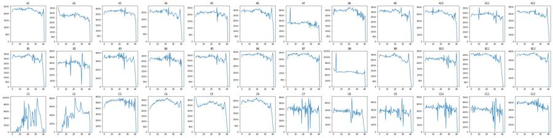
12
tool call · Bash
cat > plots1.py <<'EOF'
import pickle, numpy as np, pandas as pd
import matplotlib; matplotlib.use('Agg'); import matplotlib.pyplot as plt
from matplotlib.colors import LogNorm
data=pickle.load(open('data.pkl','rb'))
ws=['C10','C11','C12','C7','C8','C9','A1','B6','C1','C2','C4','B2']
fig,axs=plt.subplots(3,12,figsize=(48,12))
for i,w in enumerate(ws):
df=data[w]
axs[0,i].hist2d(df['FSC-A'],df['SSC-A'],bins=[np.linspace(0,1.05e6,200)]*2,norm=LogNorm(),cmap='jet'); axs[0,i].set_title(w+' FSC-A/SSC-A')
axs[1,i].hist2d(np.log10(np.clip(df['FSC-A'],1e3,None)),np.log10(np.clip(df['SSC-A'],1e3,None)),bins=[np.linspace(3,6.05,200)]*2,norm=LogNorm(),cmap='jet'); axs[1,i].set_title(w+' log FSC-A/SSC-A')
axs[2,i].hist2d(df['SSC-H'],df['SSC-A'],bins=[np.linspace(0,1.05e6,200)]*2,norm=LogNorm(),cmap='jet'); axs[2,i].set_title(w+' SSC-H/SSC-A')
plt.tight_layout(); plt.savefig('scatter.png',dpi=45)
EOF
python plots1.py13
tool output
(Bash completed with no output)
14
agent
Inputs are loaded and summarized; now viewing scatter plots to place the Cells and singlet gates.
15
tool call · Read
{
"file_path": "/task/work/scatter.png"
}16
tool output
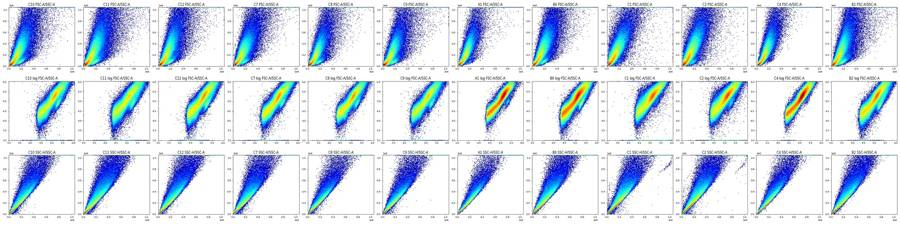
18
tool call · Bash
cat > plots2.py <<'EOF'
import pickle, numpy as np, pandas as pd
import matplotlib; matplotlib.use('Agg'); import matplotlib.pyplot as plt
from matplotlib.colors import LogNorm
data=pickle.load(open('data.pkl','rb'))
ws=['C10','C7','A1','B6']
fig,axs=plt.subplots(2,4,figsize=(28,14))
for i,w in enumerate(ws):
df=data[w]
axs[0,i].hist2d(df['FSC-A'],df['SSC-A'],bins=[np.linspace(0,6e5,250),np.linspace(0,1.05e6,250)],norm=LogNorm(),cmap='jet'); axs[0,i].set_title(w+' FSC-A/SSC-A')
axs[0,i].grid(alpha=.3)
axs[1,i].hist2d(df['FSC-A'],df['SSC-A'],bins=[np.linspace(0,2.5e5,250),np.linspace(0,3e5,250)],cmap='jet'); axs[1,i].set_title(w+' zoom linear density')
axs[1,i].grid(alpha=.3)
plt.tight_layout(); plt.savefig('scatter2.png',dpi=55)
fig,axs=plt.subplots(1,3,figsize=(24,7))
for w in ['C10','C7','A1','B6','C12','B2','C4']:
df=data[w]
axs[0].hist(df['FSC-A'],bins=np.linspace(0,4e5,300),histtype='step',label=w,density=True)
axs[1].hist(np.log10(np.clip(df['SSC-A'],100,None)),bins=np.linspace(2,6.1,300),histtype='step',label=w,density=True)
axs[2].hist(df['FSC-H'],bins=np.linspace(0,4e5,300),histtype='step',label=w,density=True)
axs[0].set_title('FSC-A');axs[1].set_title('log SSC-A');axs[2].set_title('FSC-H');axs[0].legend()
plt.tight_layout(); plt.savefig('fsc1d.png',dpi=55)
EOF
python plots2.py19
tool call · Read
{
"file_path": "/task/work/scatter2.png"
}20
tool call · Read
{
"file_path": "/task/work/fsc1d.png"
}21
tool output
(Bash completed with no output)
22
tool output
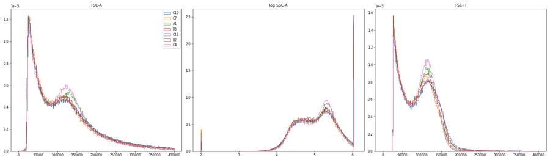
23
tool output
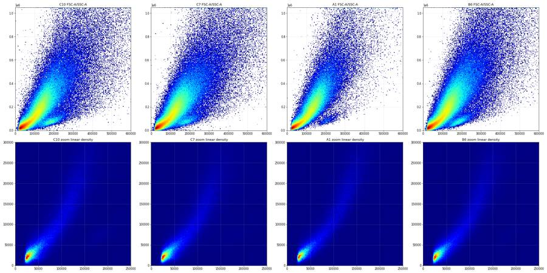
25
tool call · Bash
cat > plots3.py <<'EOF'
import pickle, numpy as np, pandas as pd
import matplotlib; matplotlib.use('Agg'); import matplotlib.pyplot as plt
from matplotlib.colors import LogNorm
from scipy.stats import binned_statistic_2d
data=pickle.load(open('data.pkl','rb'))
def al(x,c=150): return np.arcsinh(x/c)/np.log(10)
ticks=[-1e3,0,1e3,1e4,1e5,1e6]
fig,axs=plt.subplots(3,6,figsize=(42,21))
for i,w in enumerate(['C10','C11','C12','C7','C8','C9']):
df=data[w]
ax=axs[0,i]
ax.hist2d(al(df['BL1-A']),al(df['RL3-A']),bins=[np.linspace(-1.5,4.2,250)]*2,norm=LogNorm(),cmap='jet')
ax.set_xticks(al(np.array(ticks))); ax.set_xticklabels(ticks); ax.set_yticks(al(np.array(ticks))); ax.set_yticklabels(ticks); ax.grid(alpha=.4)
ax.set_title(w+' BL1 vs RL3 (all events)')
ax=axs[1,i]
st=binned_statistic_2d(df['FSC-A'],df['SSC-A'],al(df['RL3-A']),statistic='median',bins=[np.linspace(0,5e5,120),np.linspace(0,8e5,120)])
cnt=binned_statistic_2d(df['FSC-A'],df['SSC-A'],None,statistic='count',bins=[np.linspace(0,5e5,120),np.linspace(0,8e5,120)]).statistic
m=st.statistic.copy(); m[cnt<5]=np.nan
im=ax.imshow(m.T,origin='lower',extent=[0,5e5,0,8e5],aspect='auto',cmap='jet',vmin=0,vmax=3.5); plt.colorbar(im,ax=ax); ax.set_title(w+' median asinh RL3 by FSC/SSC')
ax=axs[2,i]
st=binned_statistic_2d(df['FSC-A'],df['SSC-A'],al(df['BL1-A']),statistic='median',bins=[np.linspace(0,5e5,120),np.linspace(0,8e5,120)])
m=st.statistic.copy(); m[cnt<5]=np.nan
im=ax.imshow(m.T,origin='lower',extent=[0,5e5,0,8e5],aspect='auto',cmap='jet',vmin=0,vmax=2.5); plt.colorbar(im,ax=ax); ax.set_title(w+' median asinh BL1 by FSC/SSC')
plt.tight_layout(); plt.savefig('fluor.png',dpi=45)
EOF
python plots3.py26
tool call · Read
{
"file_path": "/task/work/fluor.png"
}27
tool output
(Bash completed with no output)
28
tool output
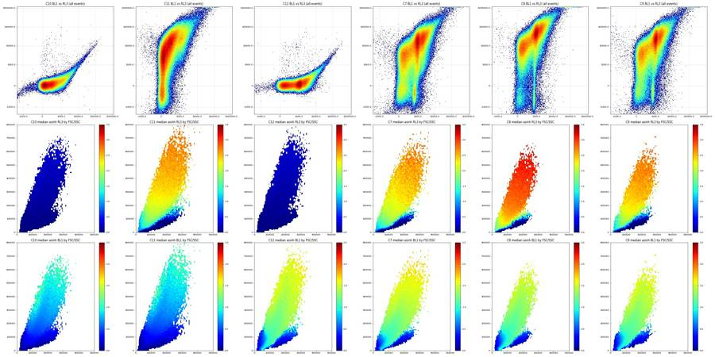
30
tool call · Bash
cat > plots4.py <<'EOF'
import pickle, numpy as np, pandas as pd
import matplotlib; matplotlib.use('Agg'); import matplotlib.pyplot as plt
from matplotlib.colors import LogNorm
data=pickle.load(open('data.pkl','rb'))
fig,axs=plt.subplots(2,3,figsize=(30,20))
for i,w in enumerate(['C11','C7','A1']):
df=data[w]
ax=axs[0,i]
ax.hist2d(df['FSC-A'],df['SSC-A'],bins=[np.linspace(0,3e5,300),np.linspace(0,3e5,300)],norm=LogNorm(),cmap='jet'); ax.set_title(w+' FSC-A/SSC-A zoom, log density')
ax.set_xticks(np.arange(0,3e5,2e4)); ax.set_yticks(np.arange(0,3e5,2e4)); ax.grid(alpha=.4)
ax=axs[1,i]
live=df[df['RL3-A']<300]
ax.hist2d(live['FSC-A'],live['SSC-A'],bins=[np.linspace(0,4e5,300),np.linspace(0,3e5,300)],norm=LogNorm(),cmap='jet'); ax.set_title(w+' RL3<300 events only')
ax.set_xticks(np.arange(0,4e5,2e4)); ax.set_yticks(np.arange(0,3e5,2e4)); ax.grid(alpha=.4)
plt.tight_layout(); plt.savefig('scatter3.png',dpi=50)
EOF
python plots4.py31
tool call · Read
{
"file_path": "/task/work/scatter3.png"
}32
tool output
(Bash completed with no output)
33
tool output
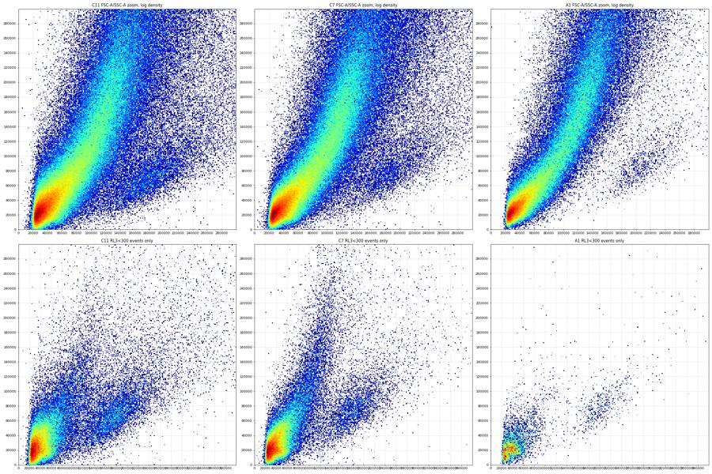
35
agent
Scatter shows a debris cluster, a Zombie-negative live lobe and a large dead-cell mass; now placing the Cells and singlet boundaries from the data.
36
tool call · Bash
cat > plots5.py <<'EOF'
import pickle, numpy as np, pandas as pd
import matplotlib; matplotlib.use('Agg'); import matplotlib.pyplot as plt
from matplotlib.colors import LogNorm
from matplotlib.path import Path
from scipy.ndimage import gaussian_filter1d
data=pickle.load(open('data.pkl','rb'))
wells=[r+str(c) for r in 'ABC' for c in range(1,13)]
v=[]
for w in wells:
h,e=np.histogram(data[w]['FSC-A'],bins=np.arange(0,2.5e5,2000)); hs=gaussian_filter1d(h.astype(float),3)
c=(e[:-1]+e[1:])/2; m=(c>45e3)&(c<125e3); v.append(c[m][np.argmin(hs[m])])
print('FSC-A valley per well',np.array(v).astype(int), np.median(v))
cells=np.array([(80e3,15e3),(80e3,250e3),(130e3,1.04e6),(1.04e6,1.04e6),(1.04e6,15e3)])
P=Path(cells)
fig,axs=plt.subplots(2,4,figsize=(40,20))
for i,w in enumerate(['C11','C7','A1','B6']):
df=data[w]; inc=P.contains_points(df[['FSC-A','SSC-A']].values); c=df[inc]
print(w,'cells %',inc.mean()*100)
ax=axs[0,i]; ax.hist2d(c['SSC-H'],c['SSC-A'],bins=[np.linspace(0,1.05e6,300)]*2,norm=LogNorm(),cmap='jet'); ax.set_title(w+' Cells SSC-H/SSC-A'); ax.grid(alpha=.4)
ax.plot([0,1.05e6],[0,1.05e6],'k--',lw=.5)
ax=axs[1,i]; r=c['SSC-A']/c['SSC-H'].clip(lower=1)
ax.hist2d(c['SSC-H'],r,bins=[np.linspace(0,1.05e6,300),np.linspace(0.8,2.5,300)],norm=LogNorm(),cmap='jet'); ax.set_title(w+' ratio SSC-A/SSC-H vs SSC-H'); ax.grid(alpha=.4)
ax.set_yticks(np.arange(0.8,2.5,0.1))
plt.tight_layout(); plt.savefig('singlets.png',dpi=45)
EOF
python plots5.py37
tool call · Read
{
"file_path": "/task/work/singlets.png"
}38
tool output
FSC-A valley per well [ 83000 83000 79000 79000 79000 77000 81000 83000 79000 81000 83000 81000 83000 85000 81000 85000 87000 83000 79000 79000 81000 83000 79000 79000 75000 77000 79000 79000 79000 77000 83000 97000 89000 85000 123000 85000] 81000.0 C11 cells % 54.992844802250104 C7 cells % 55.835024302770044 A1 cells % 58.853141208488545 B6 cells % 57.156019489564194
39
tool output
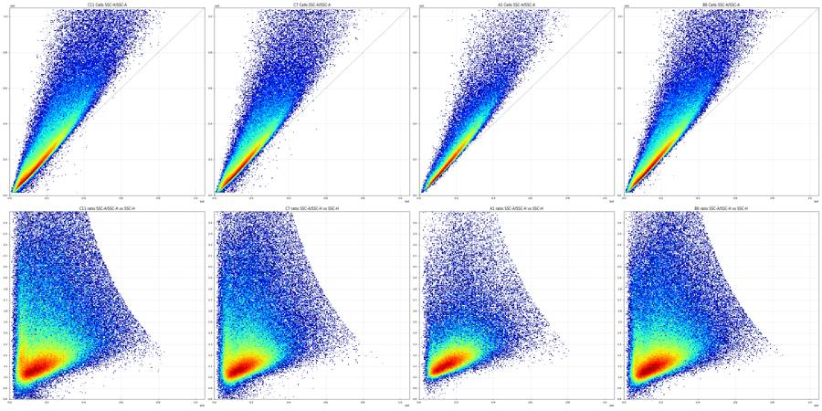
41
tool call · Bash
cat > s2.py <<'EOF'
import pickle, numpy as np, pandas as pd
from matplotlib.path import Path
data=pickle.load(open('data.pkl','rb'))
cells=np.array([(80e3,15e3),(80e3,250e3),(130e3,1.04e6),(1.04e6,1.04e6),(1.04e6,15e3)])
P=Path(cells)
for w in ['C11','C7','A1','B6','C10']:
df=data[w]; c=df[P.contains_points(df[['FSC-A','SSC-A']].values)]
r=(c['SSC-A']/c['SSC-H'].clip(lower=1)).values
print(w,len(c))
for lo,hi in [(0,5e4),(5e4,1e5),(1e5,2e5),(2e5,3e5),(3e5,5e5),(5e5,1.1e6)]:
m=(c['SSC-H']>=lo)&(c['SSC-H']<hi); rr=r[m.values]
h,e=np.histogram(rr,bins=np.arange(0.7,2.5,0.02)); mode=e[np.argmax(h)]+0.01
lowhalf=mode-np.percentile(rr[rr<mode],5) if (rr<mode).sum()>10 else np.nan
print(f' SSC-H {lo:.0f}-{hi:.0f} n={m.sum()} mode={mode:.2f} p5below={mode-lowhalf:.2f} frac<1.2={np.mean(rr<1.2):.2f} <1.3={np.mean(rr<1.3):.2f} <1.4={np.mean(rr<1.4):.2f} <1.5={np.mean(rr<1.5):.2f}')
EOF
python s2.py42
tool output
C11 200213 SSC-H 0-50000 n=7377 mode=1.09 p5below=0.69 frac<1.2=0.51 <1.3=0.60 <1.4=0.66 <1.5=0.72 SSC-H 50000-100000 n=37120 mode=1.05 p5below=0.84 frac<1.2=0.54 <1.3=0.66 <1.4=0.73 <1.5=0.78 SSC-H 100000-200000 n=73696 mode=1.07 p5below=0.93 frac<1.2=0.61 <1.3=0.71 <1.4=0.77 <1.5=0.82 SSC-H 200000-300000 n=45337 mode=1.13 p5below=1.01 frac<1.2=0.42 <1.3=0.57 <1.4=0.66 <1.5=0.73 SSC-H 300000-500000 n=31309 mode=1.23 p5below=1.08 frac<1.2=0.16 <1.3=0.34 <1.4=0.48 <1.5=0.58 SSC-H 500000-1100000 n=5374 mode=1.41 p5below=1.16 frac<1.2=0.05 <1.3=0.18 <1.4=0.38 <1.5=0.58 C7 177480 SSC-H 0-50000 n=5527 mode=1.05 p5below=0.70 frac<1.2=0.38 <1.3=0.48 <1.4=0.56 <1.5=0.63 SSC-H 50000-100000 n=31732 mode=1.03 p5below=0.87 frac<1.2=0.58 <1.3=0.69 <1.4=0.76 <1.5=0.81 SSC-H 100000-200000 n=74056 mode=1.07 p5below=0.96 frac<1.2=0.65 <1.3=0.75 <1.4=0.80 <1.5=0.84 SSC-H 200000-300000 n=40391 mode=1.13 p5below=1.02 frac<1.2=0.43 <1.3=0.59 <1.4=0.68 <1.5=0.74 SSC-H 300000-500000 n=22623 mode=1.23 p5below=1.08 frac<1.2=0.17 <1.3=0.35 <1.4=0.48 <1.5=0.58 SSC-H 500000-1100000 n=3151 mode=1.39 p5below=1.15 frac<1.2=0.05 <1.3=0.19 <1.4=0.38 <1.5=0.57 A1 107909 SSC-H 0-50000 n=1360 mode=1.05 p5below=0.89 frac<1.2=0.51 <1.3=0.62 <1.4=0.68 <1.5=0.72 SSC-H 50000-100000 n=15106 mode=1.05 p5below=0.97 frac<1.2=0.73 <1.3=0.83 <1.4=0.88 <1.5=0.92 SSC-H 100000-200000 n=45414 mode=1.11 p5below=1.03 frac<1.2=0.70 <1.3=0.84 <1.4=0.89 <1.5=0.92 SSC-H 200000-300000 n=28124 mode=1.17 p5below=1.08 frac<1.2=0.40 <1.3=0.66 <1.4=0.77 <1.5=0.83 SSC-H 300000-500000 n=15791 mode=1.27 p5below=1.12 frac<1.2=0.11 <1.3=0.35 <1.4=0.55 <1.5=0.68 SSC-H 500000-1100000 n=2114 mode=1.47 p5below=1.19 frac<1.2=0.03 <1.3=0.14 <1.4=0.34 <1.5=0.56 B6 210916 SSC-H 0-50000 n=4786 mode=1.03 p5below=0.77 frac<1.2=0.50 <1.3=0.59 <1.4=0.66 <1.5=0.72 SSC-H 50000-100000 n=32748 mode=1.03 p5below=0.92 frac<1.2=0.64 <1.3=0.75 <1.4=0.81 <1.5=0.85 SSC-H 100000-200000 n=85911 mode=1.07 p5below=0.98 frac<1.2=0.69 <1.3=0.79 <1.4=0.84 <1.5=0.87 SSC-H 200000-300000 n=52573 mode=1.13 p5below=1.04 frac<1.2=0.47 <1.3=0.65 <1.4=0.73 <1.5=0.79 SSC-H 300000-500000 n=30330 mode=1.21 p5below=1.08 frac<1.2=0.17 <1.3=0.38 <1.4=0.53 <1.5=0.63 SSC-H 500000-1100000 n=4568 mode=1.47 p5below=1.17 frac<1.2=0.05 <1.3=0.18 <1.4=0.38 <1.5=0.58 C10 160805 SSC-H 0-50000 n=4508 mode=1.05 p5below=0.68 frac<1.2=0.50 <1.3=0.60 <1.4=0.67 <1.5=0.73 SSC-H 50000-100000 n=26866 mode=1.03 p5below=0.86 frac<1.2=0.62 <1.3=0.73 <1.4=0.80 <1.5=0.84 SSC-H 100000-200000 n=63321 mode=1.07 p5below=0.95 frac<1.2=0.68 <1.3=0.77 <1.4=0.82 <1.5=0.86 SSC-H 200000-300000 n=38588 mode=1.13 p5below=1.03 frac<1.2=0.47 <1.3=0.63 <1.4=0.71 <1.5=0.77 SSC-H 300000-500000 n=23749 mode=1.21 p5below=1.07 frac<1.2=0.17 <1.3=0.37 <1.4=0.52 <1.5=0.62 SSC-H 500000-1100000 n=3773 mode=1.39 p5below=1.16 frac<1.2=0.05 <1.3=0.19 <1.4=0.39 <1.5=0.58
44
tool call · Bash
cat > common.py <<'EOF'
import pickle, numpy as np, pandas as pd
from matplotlib.path import Path
data=pickle.load(open('/task/work/data.pkl','rb'))
wells=[r+str(c) for r in 'ABC' for c in range(1,13)]
CELLS=np.array([(80e3,15e3),(80e3,250e3),(130e3,1.04e6),(1.04e6,1.04e6),(1.04e6,15e3)])
SING=np.array([(0,0),(0,25e3),(150e3,195e3),(300e3,400e3),(450e3,640e3),(650e3,1.04e6),(1.05e6,1.04e6),(1.05e6,0.92e6)])
def sc(w):
df=data[w]
c=df[Path(CELLS).contains_points(df[['FSC-A','SSC-A']].values)]
s=c[Path(SING).contains_points(c[['SSC-H','SSC-A']].values)]
return df,c,s
def al(x,c=150): return np.arcsinh(np.asarray(x)/c)/np.log(10)
ticks=[-1e3,-300,0,300,1e3,3e3,1e4,3e4,1e5,3e5,1e6]
def setax(ax):
ax.set_xticks(al(np.array(ticks))); ax.set_xticklabels([f'{t:g}' for t in ticks],rotation=90); ax.set_yticks(al(np.array(ticks))); ax.set_yticklabels([f'{t:g}' for t in ticks]); ax.grid(alpha=.4)
EOF
cat > plots6.py <<'EOF'
from common import *
import matplotlib; matplotlib.use('Agg'); import matplotlib.pyplot as plt
from matplotlib.colors import LogNorm
fig,axs=plt.subplots(2,3,figsize=(30,20))
for ax,w in zip(axs.ravel(),['C10','C11','C12','C7','C8','C9']):
df,c,s=sc(w)
print(w,len(df),len(c),len(s),round(len(s)/len(c)*100,1))
ax.hist2d(al(s['BL1-A']),al(s['RL3-A']),bins=[np.linspace(-1.2,4.2,220)]*2,norm=LogNorm(),cmap='jet'); setax(ax); ax.set_title(w+' single cells BL1 (x) vs RL3 (y)')
plt.tight_layout(); plt.savefig('fl_sc.png',dpi=50)
fig,axs=plt.subplots(2,1,figsize=(20,14))
for w in ['C10','C11','C12','C7','C8','C9']:
df,c,s=sc(w)
axs[0].hist(al(s['RL3-A']),bins=np.linspace(-1.2,4.2,250),histtype='step',label=w)
axs[1].hist(al(s['BL1-A']),bins=np.linspace(-1.2,4.2,250),histtype='step',label=w)
for ax in axs:
ax.set_xticks(al(np.array(ticks))); ax.set_xticklabels([f'{t:g}' for t in ticks]); ax.grid(alpha=.4); ax.legend(); ax.set_yscale('log')
axs[0].set_title('RL3-A single cells'); axs[1].set_title('BL1-A single cells')
plt.tight_layout(); plt.savefig('fl_1d.png',dpi=50)
EOF
python plots6.py45
tool call · Read
{
"file_path": "/task/work/fl_sc.png"
}46
tool call · Read
{
"file_path": "/task/work/fl_1d.png"
}47
tool output
C10 276619 160805 114565 71.2 C11 364071 200213 132235 66.0 C12 307442 175340 124086 70.8 C7 317865 177480 122587 69.1 C8 214991 114798 84697 73.8 C9 222410 122152 87174 71.4
48
tool output
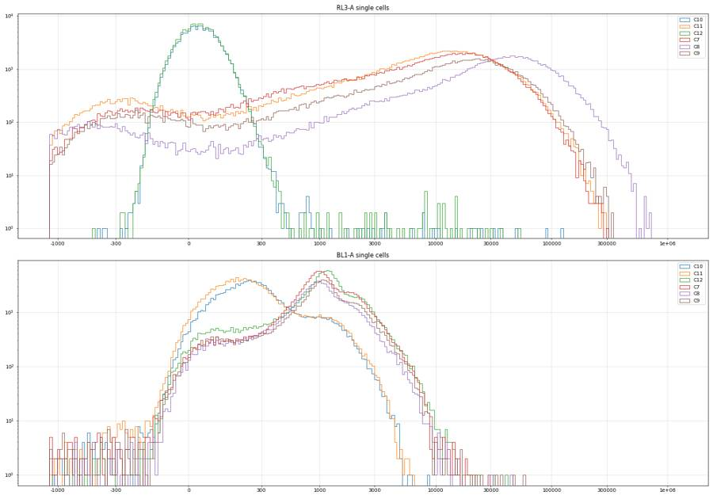
49
tool output
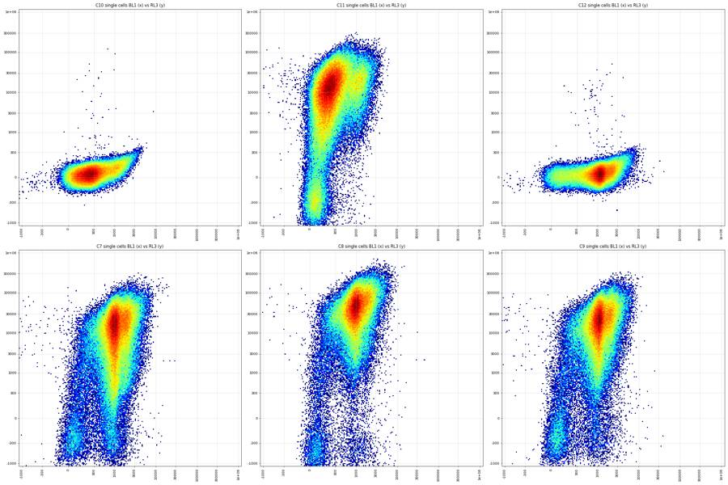
51
tool call · Bash
cat > plots7.py <<'EOF'
from common import *
import matplotlib; matplotlib.use('Agg'); import matplotlib.pyplot as plt
from matplotlib.colors import LogNorm
fig,axs=plt.subplots(4,1,figsize=(20,26))
b=np.linspace(-2.7,4.2,300)
for w in ['C10','C11','C12','C7','C8','C9','A1','B6','B2','C4']:
df,c,s=sc(w)
lobe=s[(s['FSC-A']>140e3)&(s['SSC-A']<0.45*s['FSC-A'])]
axs[0].hist(al(s['RL3-A']),bins=b,histtype='step',label=w)
axs[1].hist(al(lobe['RL3-A']),bins=b,histtype='step',label=f'{w} n={len(lobe)}')
axs[2].hist(al(lobe['BL1-A']),bins=b,histtype='step',label=w)
lv=s[s['RL3-A']<300]
axs[3].hist(al(lv['BL1-A']),bins=b,histtype='step',label=f'{w} n={len(lv)}')
print(w,'single',len(s),'RL3<300',len(lv),'pcts RL3',np.percentile(s['RL3-A'],[0.1,1,5,10,25,50]).round(0))
for ax,t in zip(axs,['RL3 single cells','RL3 live scatter lobe (FSC>140k, SSC<0.45 FSC)','BL1 live scatter lobe','BL1 of single cells with RL3<300']):
ax.set_xticks(al(np.array(ticks+[-3e3,-1e4,-3e4]))); ax.set_xticklabels([f'{t:g}' for t in ticks+[-3e3,-1e4,-3e4]]); ax.grid(alpha=.4); ax.legend(); ax.set_title(t)
axs[0].set_yscale('log')
plt.tight_layout(); plt.savefig('fl_1d2.png',dpi=50)
EOF
python plots7.py52
tool call · Read
{
"file_path": "/task/work/fl_1d2.png"
}53
tool output
C10 single 114565 RL3<300 114416 pcts RL3 [-135. -92. -57. -38. -6. 30.] C11 single 132235 RL3<300 14693 pcts RL3 [-3048. -691. -186. 184. 2607. 9129.] C12 single 124086 RL3<300 123911 pcts RL3 [-136. -94. -59. -39. -8. 28.] C7 single 122587 RL3<300 12665 pcts RL3 [-3234. -523. -56. 277. 2043. 9072.] C8 single 84697 RL3<300 5017 pcts RL3 [-2885. -927. 49. 2021. 12743. 33613.] C9 single 87174 RL3<300 8336 pcts RL3 [-3359. -563. -97. 359. 3633. 13317.] A1 single 82728 RL3<300 948 pcts RL3 [ -698. 163. 4612. 9038. 19531. 39098.] B6 single 153725 RL3<300 8579 pcts RL3 [ -976. -437. 192. 1286. 6097. 14578.] B2 single 131112 RL3<300 13996 pcts RL3 [-857. -420. -116. 224. 3489. 9630.] C4 single 108716 RL3<300 719 pcts RL3 [ -203. 553. 3059. 5196. 10171. 19166.]
54
tool output
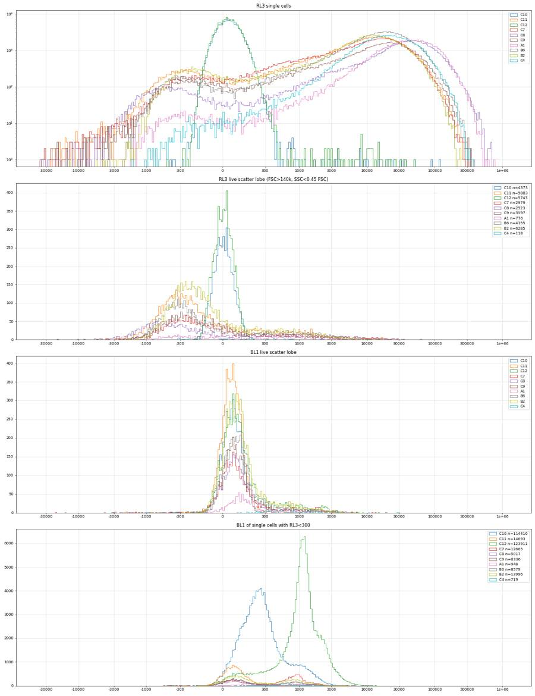
56
agent
Controls show the structure clearly (live cells Zombie-negative with RL3 slightly below zero, dead mass CellEvent-shifted); now pinning down the RL3 and BL1 thresholds numerically.
57
tool call · Bash
cat > thr.py <<'EOF'
from common import *
from scipy.ndimage import gaussian_filter1d
b=np.linspace(-2.7,4.2,277); cen=(b[:-1]+b[1:])/2
def valley(x,lo,hi,sig=3):
h,_=np.histogram(al(x),bins=b); hs=gaussian_filter1d(h.astype(float),sig)
m=(cen>al(lo))&(cen<al(hi)); return 150*np.sinh(cen[m][np.argmin(hs[m])]*np.log(10))
print('RL3 valley (single cells), search -200..3000')
S={}
for w in wells:
S[w]=sc(w)[2]
for w in ['C11','C7','C8','C9']+wells[:27:3]:
s=S[w]; print(w, round(valley(s['RL3-A'],-200,3000)), [int((s['RL3-A']<t).sum()) for t in (100,200,300,500,1000,2000)], len(s))
print('BL1 valley in Live (RL3<300), search 150..900')
for w in ['C12','C7','C8','C9']+wells[:27:3]:
s=S[w]; lv=s[s['RL3-A']<300]
print(w, round(valley(lv['BL1-A'],150,900,4)), len(lv), [round((lv['BL1-A']>t).mean()*100,1) for t in (300,400,500,600,800)])
pool=pd.concat([S[w][S[w]['RL3-A']<300] for w in wells[:27]+['C7','C8','C9']])
print('pooled live BL1 valley',valley(pool['BL1-A'],150,900,3), len(pool))
print('C10 unstained single: pct BL1>t', [(t,round((S['C10']['BL1-A']>t).mean()*100,1)) for t in (300,400,500,800,1000,2000,3000,5000)])
print('C11 zombie only single: pct BL1>t', [(t,round((S['C11']['BL1-A']>t).mean()*100,1)) for t in (300,400,500,800,1000,2000,3000,5000)])
print('C12 single: pct BL1>t', [(t,round((S['C12']['BL1-A']>t).mean()*100,1)) for t in (300,400,500,800,1000,2000,3000,5000)])
print('C7 single: pct BL1>t', [(t,round((S['C7']['BL1-A']>t).mean()*100,1)) for t in (300,400,500,800,1000,2000,3000,5000)])
# C11 live cells BL1 (FMO for caspase within Live)
l=S['C11'][S['C11']['RL3-A']<300]; print('C11 live BL1 pcts 50,90,95,99,99.5', np.percentile(l['BL1-A'],[50,90,95,99,99.5]).round(0))
l=S['C10']; lobe=l[(l['FSC-A']>140e3)&(l['SSC-A']<0.45*l['FSC-A'])]; print('C10 lobe BL1 pcts', np.percentile(lobe['BL1-A'],[50,90,95,99,99.5]).round(0))
EOF
python thr.py58
tool output
RL3 valley (single cells), search -200..3000 C11 57 [12052, 13419, 14693, 16995, 21853, 29332] 132235 C7 -13 [9026, 10880, 12665, 15975, 22217, 30372] 122587 C8 30 [4437, 4717, 5017, 5494, 6542, 8440] 84697 C9 76 [6753, 7589, 8336, 9676, 12458, 16662] 87174 A1 39 [772, 863, 948, 1115, 1504, 2196] 82728 A4 76 [1816, 2054, 2245, 2580, 3260, 4551] 77851 A7 86 [6957, 7317, 7635, 8222, 9361, 11300] 119947 A10 57 [4695, 4941, 5200, 5635, 6719, 8818] 148144 B1 86 [8262, 8701, 9100, 9893, 11592, 14581] 110328 B4 48 [2852, 3093, 3319, 3704, 4552, 6077] 96750 B7 129 [2161, 2502, 2774, 3281, 4379, 6204] 89148 B10 30 [2275, 2482, 2652, 2966, 3705, 5087] 86404 C1 -4 [1678, 1764, 1845, 2010, 2385, 3168] 107501 BL1 valley in Live (RL3<300), search 150..900 C12 152 123911 [88.4, 85.8, 83.0, 79.8, 71.4] C7 253 12665 [62.2, 58.9, 54.9, 49.6, 36.0] C8 350 5017 [32.3, 30.2, 27.8, 25.7, 20.0] C9 328 8336 [39.2, 36.5, 33.6, 30.7, 23.3] A1 328 948 [34.4, 31.6, 27.8, 21.5, 9.0] A4 328 2245 [25.8, 22.7, 19.5, 14.6, 7.4] A7 396 7635 [20.6, 18.2, 16.3, 14.5, 9.8] A10 372 5200 [19.9, 17.5, 15.7, 13.7, 7.4] B1 372 9100 [26.6, 23.5, 20.9, 18.7, 13.2] B4 350 3319 [30.4, 27.0, 24.2, 19.3, 11.9] B7 350 2774 [31.1, 27.6, 23.8, 19.4, 10.2] B10 328 2652 [30.1, 27.2, 23.5, 19.7, 12.7] C1 860 1845 [30.6, 23.6, 19.0, 13.8, 7.2] pooled live BL1 valley 328.4812111430075 177639 C10 unstained single: pct BL1>t [(300, 37.8), (400, 25.4), (500, 19.4), (800, 11.5), (1000, 8.4), (2000, 1.2), (3000, 0.2), (5000, 0.0)] C11 zombie only single: pct BL1>t [(300, 32.2), (400, 22.4), (500, 17.5), (800, 10.8), (1000, 8.0), (2000, 1.3), (3000, 0.2), (5000, 0.0)] C12 single: pct BL1>t [(300, 88.5), (400, 85.8), (500, 83.0), (800, 71.4), (1000, 58.4), (2000, 15.0), (3000, 4.7), (5000, 0.9)] C7 single: pct BL1>t [(300, 92.1), (400, 89.9), (500, 86.8), (800, 70.6), (1000, 52.0), (2000, 14.5), (3000, 4.6), (5000, 0.8)] C11 live BL1 pcts 50,90,95,99,99.5 [ 60. 165. 228. 698. 1005.] C10 lobe BL1 pcts [ 47. 117. 138. 182. 200.]
60
tool call · Bash
cat > qc2.py <<'EOF'
from common import *
import matplotlib; matplotlib.use('Agg'); import matplotlib.pyplot as plt
rows=[]
fig,axs=plt.subplots(6,6,figsize=(42,36))
for ax,w in zip(axs.ravel(),wells):
df=data[w]; t=df['Time'].values
e=np.arange(0,42.01,0.25); h,_=np.histogram(t,bins=e)
med=np.median(h[8:120])
rel=h/med
# last time rate >= 50% of median
idx=np.where(rel>=0.5)[0]
t_end50=e[idx.max()+1]
low=(rel[4:int(t_end50/0.25)-1]<0.5).sum()*0.25
hi=(rel[4:]>1.5).sum()*0.25
rows.append(dict(well=w,med_rate_per_s=med*4,t_last=t.max(),t_end50=t_end50,sec_below50_before_end=low,sec_above150=hi,
ev_first1s=(t<1).sum(), ev_last3s=(t>t.max()-3).sum()/3/(med*4), ev_last5s=(t>t.max()-5).sum()/5/(med*4)))
b=np.arange(0,42,1.0); k=np.digitize(t,b)-1
g=df.groupby(k)
ax.plot(e[:-1],rel,color='k',lw=.8,label='rate/median')
for c,col in [('FSC-A','C0'),('SSC-A','C1'),('BL1-A','C2'),('RL3-A','C3')]:
m=g[c].median(); n=g[c].size(); m=m[n>50]
ax.plot(m.index+0.5,m/np.median(df[c]),color=col,label=c+' median/overall')
ax.set_ylim(0,3); ax.set_title(w); ax.grid(alpha=.3)
if w=='A1': ax.legend()
plt.tight_layout(); plt.savefig('time2.png',dpi=40)
pd.set_option('display.width',300)
print(pd.DataFrame(rows).round(2).to_string())
EOF
python qc2.py61
tool call · Read
{
"file_path": "/task/work/time2.png"
}62
tool output
well med_rate_per_s t_last t_end50 sec_below50_before_end sec_above150 ev_first1s ev_last3s ev_last5s 0 A1 4608.0 40.89 41.00 0.00 0.00 4372 0.90 0.88 1 A2 5506.0 40.89 40.75 0.00 0.00 7166 0.83 0.85 2 A3 5604.0 40.96 41.00 0.00 0.00 5153 0.85 0.88 3 A4 4082.0 41.08 40.50 0.00 0.00 4099 0.75 0.77 4 A5 4296.0 40.86 40.75 0.25 0.00 3803 0.84 0.87 5 A6 5904.0 40.90 40.75 0.00 0.00 5781 0.80 0.81 6 A7 7144.0 40.65 40.75 0.25 0.50 6985 0.80 0.86 7 A8 6040.0 40.94 41.00 0.00 0.00 5344 0.80 0.80 8 A9 6194.0 40.94 40.75 0.50 0.00 6074 0.79 0.80 9 A10 8604.0 40.64 40.50 0.00 0.00 8608 0.77 0.79 10 A11 5776.0 40.95 41.00 0.50 0.00 5325 0.89 0.88 11 A12 8512.0 40.90 40.50 0.00 0.00 8623 0.76 0.80 12 B1 6586.0 40.98 39.75 0.25 0.00 6256 0.65 0.74 13 B2 8186.0 40.87 41.00 1.25 0.25 7681 0.84 0.86 14 B3 7064.0 40.88 40.00 0.25 0.00 6799 0.69 0.78 15 B4 5500.0 40.93 41.00 0.25 0.00 5185 0.86 0.88 16 B5 5736.0 41.00 40.50 0.25 0.00 5657 0.79 0.82 17 B6 9250.0 40.87 41.00 0.50 0.00 8781 0.95 0.91 18 B7 4710.0 41.00 41.00 0.00 0.00 4298 0.87 0.86 19 B8 10136.0 40.65 40.75 0.00 0.75 12421 0.92 0.90 20 B9 5732.0 40.96 39.50 0.00 0.00 5629 0.54 0.69 21 B10 4712.0 40.94 41.00 0.25 0.00 4419 0.94 0.92 22 B11 7106.0 40.94 39.50 0.00 0.00 7196 0.46 0.61 23 B12 7298.0 40.82 40.75 0.00 0.00 7053 0.90 0.87 24 C1 4548.0 40.72 40.75 12.00 16.25 74 0.34 0.86 25 C2 7744.0 40.93 41.00 9.00 4.75 167 1.12 1.13 26 C3 10624.0 40.74 40.75 0.50 0.00 8429 0.92 0.90 27 C4 5890.0 40.97 41.00 0.00 0.00 4402 0.90 0.88 28 C5 5292.0 40.91 39.50 0.00 0.00 6322 0.48 0.68 29 C6 5018.0 41.02 39.25 0.00 0.00 4631 0.39 0.57 30 C7 8224.0 40.93 40.75 2.25 0.75 7981 0.92 0.89 31 C8 5802.0 40.81 38.50 0.75 0.25 5433 0.26 0.52 32 C9 5668.0 40.87 40.75 2.00 0.50 5412 0.94 0.90 33 C10 7072.0 40.74 40.75 2.50 1.75 6917 0.90 0.91 34 C11 9384.0 40.91 41.00 3.25 0.75 9175 0.88 0.85 35 C12 7928.0 40.88 40.75 0.25 0.00 7847 0.82 0.82
63
tool output
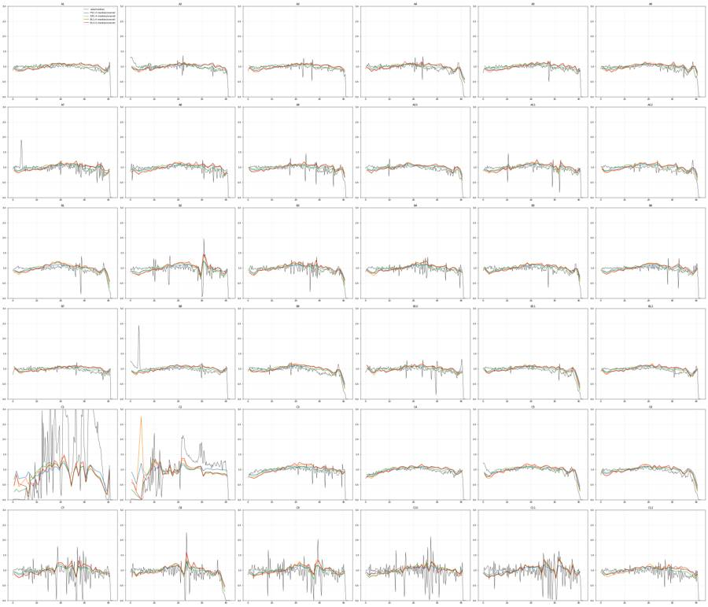
65
agent
Flow QC shows C1 and C2 with grossly unstable acquisition; now building the FlowKit gate set and saving a first `gates.xml`.
66
tool call · Bash
python -c " import flowkit as fk, inspect print(fk.__version__) print(inspect.signature(fk.transforms.LogicleTransform.__init__)) print(inspect.signature(fk.GatingStrategy.add_transform)) print(inspect.signature(fk.GatingStrategy.add_gate)) print(inspect.signature(fk.Dimension.__init__)) print(inspect.signature(fk.gates.RectangleGate.__init__)) print(inspect.signature(fk.gates.PolygonGate.__init__)) print(inspect.signature(fk.export_gatingml)) print(inspect.signature(fk.GatingStrategy.gate_sample)) import numpy as np t=fk.transforms.LogicleTransform(1048576,1.0,4.5,0) print(t.apply(np.array([-1e6,-65536,-3000,-1000,-300,0,300,400,500,1000,1e4,1e5,1048575.,2e6]))) "
67
tool output
1.2.3 (self, param_t, param_w, param_m, param_a) (self, transform_id, transform) (self, gate, gate_path, sample_id=None) (self, dimension_id, compensation_ref='uncompensated', transformation_ref=None, range_min=None, range_max=None) (self, gate_name, dimensions, use_complement=False) (self, gate_name, dimensions, vertices, use_complement=False) (gating_strategy, file_handle, sample_id=None) (self, sample, cache_events=False, verbose=False) [-0.55095817 -0.28267628 0.07288698 0.16649548 0.20527514 0.22222222 0.23916931 0.24479547 0.25040165 0.27794896 0.52130907 0.76974751 0.99999991 1.06251305]
69
tool call · Bash
cat > plots8.py <<'EOF'
from common import *
import flowkit as fk
import matplotlib; matplotlib.use('Agg'); import matplotlib.pyplot as plt
from matplotlib.colors import LogNorm
T=fk.transforms.LogicleTransform(1048576,1.0,4.5,0)
L=lambda x: T.apply(np.asarray(x,dtype=float))
tk=np.array([-1e3,-300,0,300,1e3,3e3,1e4,1e5,1e6])
ws=['C10','C11','C12','C7','C8','C9','A1','A8','B2','B6','C3','C4']
fig,axs=plt.subplots(3,4,figsize=(40,30))
for ax,w in zip(axs.ravel(),ws):
s=sc(w)[2]
ax.hist2d(L(s['BL1-A']),L(s['RL3-A']),bins=[np.linspace(0.1,1.02,260)]*2,norm=LogNorm(),cmap='jet')
ax.set_xticks(L(tk)); ax.set_xticklabels([f'{t:g}' for t in tk],rotation=90); ax.set_yticks(L(tk)); ax.set_yticklabels([f'{t:g}' for t in tk]); ax.grid(alpha=.5)
for v in (400,): ax.axvline(L([v])[0],color='k',ls='--')
for v in (500,1000): ax.axhline(L([v])[0],color='k',ls='--')
ax.set_title(w+' single cells, logicle; lines BL1=400, RL3=500/1000',fontsize=16)
plt.tight_layout(); plt.savefig('fl_logicle.png',dpi=42)
EOF
python plots8.py70
tool call · Read
{
"file_path": "/task/work/fl_logicle.png"
}71
tool output
(Bash completed with no output)
72
tool output
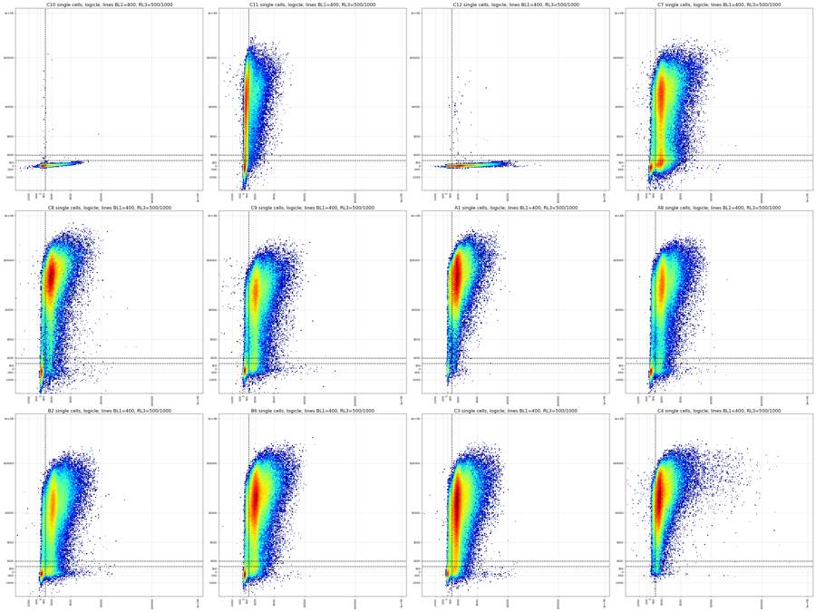
74
tool call · Bash
cat > plots9.py <<'EOF'
from common import *
import matplotlib; matplotlib.use('Agg'); import matplotlib.pyplot as plt
from matplotlib.colors import LogNorm
ws=['C11','C12','C7','C9','B2','B6','A8','C8']
fig,axs=plt.subplots(2,4,figsize=(40,20))
for ax,w in zip(axs.ravel(),ws):
s=sc(w)[2]
ax.hist2d(s['BL1-A'],s['RL3-A'],bins=[np.linspace(-300,4000,200),np.linspace(-2000,4000,200)],norm=LogNorm(),cmap='jet')
ax.set_yticks(np.arange(-2000,4001,250)); ax.set_xticks(np.arange(-250,4001,250)); ax.grid(alpha=.5); ax.set_title(w+' single cells linear zoom',fontsize=16)
plt.tight_layout(); plt.savefig('fl_lin.png',dpi=42)
fig,axs=plt.subplots(2,1,figsize=(20,14))
for w in ws:
s=sc(w)[2]
axs[0].hist(s['RL3-A'],bins=np.arange(-2000,4000,40),histtype='step',label=w)
p=s[s['BL1-A']>400]
axs[1].hist(p['RL3-A'],bins=np.arange(-2000,4000,40),histtype='step',label=w)
axs[0].set_title('RL3 linear, single cells'); axs[1].set_title('RL3 linear, single cells BL1>400')
for ax in axs: ax.legend(); ax.grid(alpha=.4); ax.set_xticks(np.arange(-2000,4001,250)); ax.set_ylim(0,700)
plt.tight_layout(); plt.savefig('rl3_lin.png',dpi=50)
EOF
python plots9.py75
tool call · Read
{
"file_path": "/task/work/fl_lin.png"
}76
tool call · Read
{
"file_path": "/task/work/rl3_lin.png"
}77
tool output
(Bash completed with no output)
78
tool output
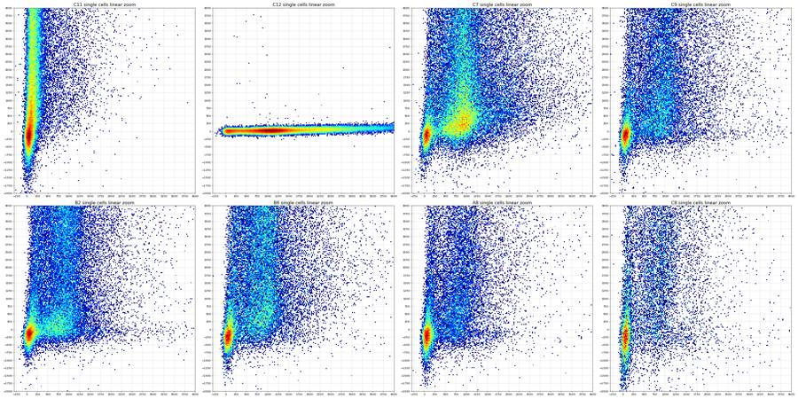
79
tool output
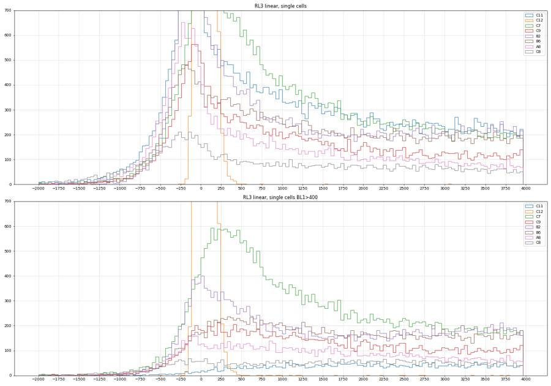
81
tool call · Bash
mkdir -p /task/outputs && cd /task/work && cat > build_gates.py <<'EOF'
import flowkit as fk, numpy as np
from flowkit import Dimension, GatingStrategy
from flowkit.gates import RectangleGate, PolygonGate
from flowkit.transforms import LogicleTransform
# ---- boundaries (raw detector units) ----
CELLS=[(80e3,15e3),(80e3,250e3),(130e3,1.04e6),(1.04e6,1.04e6),(1.04e6,15e3)] # FSC-A, SSC-A
SING=[(0,0),(0,25e3),(150e3,195e3),(300e3,400e3),(450e3,640e3),(650e3,1.04e6),(1.05e6,1.04e6),(1.05e6,0.92e6)] # SSC-H, SSC-A
RL3_LIVE_MAX=1000. # Live upper edge (Zombie NIR-negative)
RL3_LATE_MIN=2000. # Late_apoptosis lower edge (Zombie NIR-bright)
BL1_POS_MIN=400. # CellEvent-positive boundary
LO=-200000. # below FCS floor (-65536): keeps every negative-valued event
HI=2.0e6 # above detector maximum (1048575)
def build():
T=LogicleTransform(param_t=1048576, param_w=1.0, param_m=4.5, param_a=0)
L=lambda v: float(T.apply(np.array([v],dtype=float))[0])
gs=GatingStrategy()
gs.add_transform('logicle', T)
d=lambda ch,**k: Dimension(ch, compensation_ref='uncompensated', **k)
gs.add_gate(PolygonGate('Cells',[d('FSC-A'),d('SSC-A')],CELLS),('root',))
gs.add_gate(PolygonGate('Single_Cells',[d('SSC-H'),d('SSC-A')],SING),('root','Cells'))
gs.add_gate(RectangleGate('Live',[
d('BL1-A',transformation_ref='logicle',range_min=L(LO),range_max=L(HI)),
d('RL3-A',transformation_ref='logicle',range_min=L(LO),range_max=L(RL3_LIVE_MAX))]),('root','Cells','Single_Cells'))
gs.add_gate(RectangleGate('Caspase_pos',[
d('BL1-A',transformation_ref='logicle',range_min=L(BL1_POS_MIN),range_max=L(HI)),
d('RL3-A',transformation_ref='logicle',range_min=L(LO),range_max=L(RL3_LIVE_MAX))]),('root','Cells','Single_Cells','Live'))
late=[(L(BL1_POS_MIN),L(RL3_LATE_MIN)),(L(BL1_POS_MIN),L(HI)),(L(HI),L(HI)),(L(HI),L(RL3_LATE_MIN))]
gs.add_gate(PolygonGate('Late_apoptosis',[
d('BL1-A',transformation_ref='logicle'),d('RL3-A',transformation_ref='logicle')],late),('root','Cells','Single_Cells'))
return gs
if __name__=='__main__':
gs=build()
with open('/task/outputs/gates.xml','wb') as f: fk.export_gatingml(gs,f)
g2=fk.parse_gating_xml('/task/outputs/gates.xml')
print(g2.get_gate_ids())
print(g2.get_gate_hierarchy())
EOF
python build_gates.py && head -c 3000 /task/outputs/gates.xml82
tool output (error)
Exit code 1
Traceback (most recent call last):
File "/task/work/build_gates.py", line 3, in <module>
from flowkit.gates import RectangleGate, PolygonGate
ModuleNotFoundError: No module named 'flowkit.gates'83
tool call · Bash
sed -i 's/^from flowkit.gates import RectangleGate, PolygonGate/RectangleGate, PolygonGate = fk.gates.RectangleGate, fk.gates.PolygonGate/; s/^from flowkit.transforms import LogicleTransform/LogicleTransform = fk.transforms.LogicleTransform/' build_gates.py && python build_gates.py && head -c 2500 /task/outputs/gates.xml
84
tool output
[('Cells', ('root',)), ('Single_Cells', ('root', 'Cells')), ('Live', ('root', 'Cells', 'Single_Cells')), ('Caspase_pos', ('root', 'Cells', 'Single_Cells', 'Live')), ('Late_apoptosis', ('root', 'Cells', 'Single_Cells'))]
root
╰── Cells
╰── Single_Cells
├── Live
│ ╰── Caspase_pos
╰── Late_apoptosis
<?xml version='1.0' encoding='UTF-8'?>
<gating:Gating-ML xmlns:gating="http://www.isac-net.org/std/Gating-ML/v2.0/gating" xmlns:data-type="http://www.isac-net.org/std/Gating-ML/v2.0/datatypes" xmlns:transforms="http://www.isac-net.org/std/Gating-ML/v2.0/transformations">
<transforms:transformation transforms:id="logicle">
<transforms:logicle transforms:T="1048576" transforms:W="1.0" transforms:M="4.5" transforms:A="0"/>
</transforms:transformation>
<gating:PolygonGate gating:id="Cells">
<gating:dimension gating:compensation-ref="uncompensated">
<data-type:fcs-dimension data-type:name="FSC-A"/>
</gating:dimension>
<gating:dimension gating:compensation-ref="uncompensated">
<data-type:fcs-dimension data-type:name="SSC-A"/>
</gating:dimension>
<gating:vertex>
<gating:coordinate data-type:value="80000.0"/>
<gating:coordinate data-type:value="15000.0"/>
</gating:vertex>
<gating:vertex>
<gating:coordinate data-type:value="80000.0"/>
<gating:coordinate data-type:value="250000.0"/>
</gating:vertex>
<gating:vertex>
<gating:coordinate data-type:value="130000.0"/>
<gating:coordinate data-type:value="1040000.0"/>
</gating:vertex>
<gating:vertex>
<gating:coordinate data-type:value="1040000.0"/>
<gating:coordinate data-type:value="1040000.0"/>
</gating:vertex>
<gating:vertex>
<gating:coordinate data-type:value="1040000.0"/>
<gating:coordinate data-type:value="15000.0"/>
</gating:vertex>
</gating:PolygonGate>
<gating:PolygonGate gating:id="Single_Cells" gating:parent_id="Cells">
<gating:dimension gating:compensation-ref="uncompensated">
<data-type:fcs-dimension data-type:name="SSC-H"/>
</gating:dimension>
<gating:dimension gating:compensation-ref="uncompensated">
<data-type:fcs-dimension data-type:name="SSC-A"/>
</gating:dimension>
<gating:vertex>
<gating:coordinate data-type:value="0"/>
<gating:coordinate data-type:value="0"/>
</gating:vertex>
<gating:vertex>
<gating:coordinate data-type:value="0"/>
<gating:coordinate data-type:value="25000.0"/>
</gating:vertex>
<gating:vertex>
<gating:coordinate data-type:value="150000.0"/>
<gating:coordinate data-type:value="195000.0"/>
</gating:vertex>
<gating:vertex>
<gating:coordinate data-type:value="300000.0"/>
<gating:coordinate data-type:value="400000.0"/>
</gating:vertex>
<gatin86
tool call · Bash
cat > run_counts.py <<'EOF'
import flowkit as fk, numpy as np, pandas as pd, pickle
from matplotlib.path import Path
import build_gates as B
lay=pd.read_csv('/task/inputs/plate_layout.csv')
gs=fk.parse_gating_xml('/task/outputs/gates.xml')
pops=[('Cells','All_events'),('Single_Cells','Cells'),('Live','Single_Cells'),('Caspase_pos','Live'),('Late_apoptosis','Single_Cells')]
paths={g:p for g,p in gs.get_gate_ids()}
rows=[]; memb={}; bad=0
for _,r in lay.iterrows():
s=fk.Sample('/task/inputs/raw/'+r.file)
res=gs.gate_sample(s)
n={'All_events':s.event_count}; m={}
for p,par in pops:
mm=res.get_gate_membership(p,gate_path=paths[p])
# enforce full ancestor chain explicitly
for a in paths[p][1:]: mm=mm&res.get_gate_membership(a,gate_path=paths[a])
m[p]=mm; n[p]=int(mm.sum())
memb[r.well]=m
# independent numpy check on raw values
df=s.as_dataframe(source='raw'); df.columns=[c[0] for c in df.columns]
c=Path(B.CELLS).contains_points(df[['FSC-A','SSC-A']].values)
sg=c&Path(B.SING).contains_points(df[['SSC-H','SSC-A']].values)
lv=sg&(df['RL3-A'].values<B.RL3_LIVE_MAX)
cp=lv&(df['BL1-A'].values>=B.BL1_POS_MIN)
la=sg&(df['BL1-A'].values>=B.BL1_POS_MIN)&(df['RL3-A'].values>=B.RL3_LATE_MIN)
chk=dict(Cells=c.sum(),Single_Cells=sg.sum(),Live=lv.sum(),Caspase_pos=cp.sum(),Late_apoptosis=la.sum())
for p,_ in pops:
if abs(chk[p]-n[p])>max(3,0.0005*n[p]): bad+=1; print('MISMATCH',r.well,p,n[p],chk[p])
for p,par in pops:
rows.append(dict(file=r.file,well=r.well,population=p,count=n[p],parent_population=par,
pct_of_parent=round(100*n[p]/n[par],4) if n[par]>0 else 0.0))
out=pd.DataFrame(rows,columns=['file','well','population','count','parent_population','pct_of_parent'])
out.to_csv('/task/outputs/counts.csv',index=False)
pickle.dump(memb,open('memb.pkl','wb'))
print('mismatches',bad,'rows',len(out))
w=out.pivot(index='well',columns='population',values='count')[[p for p,_ in pops]]
pc=out.pivot(index='well',columns='population',values='pct_of_parent')[[p for p,_ in pops]].add_suffix('_pct')
t=pd.concat([w,pc],axis=1).loc[lay.well]; t.insert(0,'construct',lay.construct.values)
pd.set_option('display.width',250); print(t.round(2).to_string())
t.to_csv('summary.csv')
EOF
python run_counts.py87
tool output
mismatches 0 rows 180 population construct Cells Single_Cells Live Caspase_pos Late_apoptosis Cells_pct Single_Cells_pct Live_pct Caspase_pos_pct Late_apoptosis_pct well A1 RSV 107911 82730 1504 559 72906 58.85 76.67 1.82 37.17 88.13 A2 RSV 129865 95479 5110 1410 80763 58.56 73.52 5.35 27.59 84.59 A3 RSV 136040 105257 5655 3322 89619 61.13 77.37 5.37 58.74 85.14 A4 hSyn 100812 77852 3260 1090 67627 62.83 77.22 4.19 33.44 86.87 A5 hSyn 101444 79411 5630 2751 66674 59.70 78.28 7.09 48.86 83.96 A6 hSyn 142282 110787 9515 2643 92434 61.63 77.86 8.59 27.78 83.43 A7 9523 165611 119950 9361 2155 99245 58.58 72.43 7.80 23.02 82.74 A8 9523 142946 106645 13097 4520 83802 60.33 74.61 12.28 34.51 78.58 A9 9523 148380 112629 7520 2049 95792 61.36 75.91 6.68 27.25 85.05 A10 3945 200191 148146 6719 1632 128332 59.61 74.00 4.54 24.29 86.63 A11 3945 129370 99253 7905 3015 82847 56.60 76.72 7.96 38.14 83.47 A12 3945 189787 140872 8584 2862 120245 57.36 74.23 6.09 33.34 85.36 B1 9421 147486 110328 11592 3564 87225 57.87 74.81 10.51 30.75 79.06 B2 9421 182253 131115 19782 9436 99132 57.05 71.94 15.09 47.70 75.61 B3 9421 163969 120710 15597 6262 94622 59.52 73.62 12.92 40.15 78.39 B4 3503 125614 96752 4552 1550 82731 57.13 77.02 4.70 34.05 85.51 B5 3503 128293 98894 7154 2758 82159 56.98 77.08 7.23 38.55 83.08 B6 3503 210916 153725 13688 6934 126366 57.16 72.88 8.90 50.66 82.20 B7 8820 111305 89150 4380 1709 77463 59.54 80.10 4.91 39.02 86.89 B8 8820 240839 174589 10300 6003 147871 58.41 72.49 5.90 58.28 84.70 B9 8820 129223 99829 5001 2104 86311 58.90 77.25 5.01 42.07 86.46 B10 8790 107991 86404 3705 1318 74611 57.60 80.01 4.29 35.57 86.35 B11 8790 162593 125082 7496 4007 107308 59.90 76.93 5.99 53.46 85.79 B12 8790 170293 130882 7540 4518 112519 59.35 76.86 5.76 59.92 85.97 C1 3945_3503 153026 107503 2385 651 92225 61.02 70.25 2.22 27.30 85.79 C2 3945_3503 188310 134928 6321 2682 117057 61.65 71.65 4.68 42.43 86.76 C3 3945_3503 248521 175347 14016 8710 144154 59.34 70.56 7.99 62.14 82.21 C4 AAV1_GFP 138672 108718 1708 1282 98874 60.26 78.40 1.57 75.06 90.95 C5 AAV1_GFP 126046 99180 2122 1700 89794 60.95 78.69 2.14 80.11 90.54 C6 AAV1_GFP 112491 90266 1108 925 83999 59.27 80.24 1.23 83.48 93.06 C7 no_virus 177481 122589 22217 15795 87200 55.84 69.07 18.12 71.09 71.13 C8 no_virus 114800 84699 6542 2356 69845 53.40 73.78 7.72 36.01 82.46 C9 no_virus 122153 87175 12458 6046 65839 54.92 71.37 14.29 48.53 75.53 C10 no_virus 160806 114567 114541 29188 12 58.13 71.25 99.98 25.48 0.01 C11 no_virus 200214 132236 21854 908 27687 54.99 66.05 16.53 4.15 20.94 C12 no_virus 175343 124089 124034 106439 44 57.03 70.77 99.96 85.81 0.04
89
tool call · Bash
cat > overlay.py <<'EOF'
from common import *
import build_gates as B, flowkit as fk
import matplotlib; matplotlib.use('Agg'); import matplotlib.pyplot as plt
from matplotlib.colors import LogNorm
T=fk.transforms.LogicleTransform(1048576,1.0,4.5,0); L=lambda x: T.apply(np.asarray(x,dtype=float))
tk=np.array([-1e3,0,400,1e3,2e3,1e4,1e5,1e6])
ws=['C10','C11','C12','C7','C9','B2']
fig,axs=plt.subplots(3,6,figsize=(48,24))
for i,w in enumerate(ws):
df=data[w]; c=df[Path(B.CELLS).contains_points(df[['FSC-A','SSC-A']].values)]; s=c[Path(B.SING).contains_points(c[['SSC-H','SSC-A']].values)]
ax=axs[0,i]; ax.hist2d(df['FSC-A'],df['SSC-A'],bins=[np.linspace(0,6e5,250),np.linspace(0,1.06e6,250)],norm=LogNorm(),cmap='jet')
p=np.array(B.CELLS+[B.CELLS[0]]); ax.plot(p[:,0],p[:,1],'k-',lw=2); ax.set_xlim(0,6e5); ax.set_title(w+' Cells gate',fontsize=16)
ax=axs[1,i]; ax.hist2d(c['SSC-H'],c['SSC-A'],bins=[np.linspace(0,1.06e6,250)]*2,norm=LogNorm(),cmap='jet')
p=np.array(B.SING+[B.SING[0]]); ax.plot(p[:,0],p[:,1],'k-',lw=2); ax.set_title(w+' Single_Cells gate',fontsize=16)
ax=axs[2,i]; ax.hist2d(L(s['BL1-A']),L(s['RL3-A']),bins=[np.linspace(0.1,1.02,250)]*2,norm=LogNorm(),cmap='jet')
ax.set_xticks(L(tk)); ax.set_xticklabels([f'{t:g}' for t in tk],rotation=90); ax.set_yticks(L(tk)); ax.set_yticklabels([f'{t:g}' for t in tk])
a,b_,c_=L([B.BL1_POS_MIN])[0],L([B.RL3_LIVE_MAX])[0],L([B.RL3_LATE_MIN])[0]
ax.plot([0.1,1.02],[b_,b_],'k-',lw=2); ax.plot([a,a],[0.1,b_],'k-',lw=2); ax.plot([a,a,1.02],[1.02,c_,c_],'m-',lw=2)
ax.set_title(w+' Live / Caspase_pos (black), Late_apoptosis (magenta)',fontsize=14)
plt.tight_layout(); plt.savefig('overlay.png',dpi=40)
EOF
python overlay.py90
tool call · Read
{
"file_path": "/task/work/overlay.png"
}91
tool output
(Bash completed with no output)
92
tool output
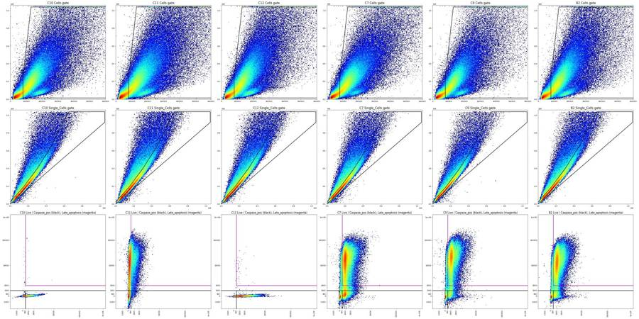
94
agent
Gates look sensible on the controls and counts are written; now running the per-well QC (time stability, GFP control check, control sanity) for the flags.
95
tool call · Bash
cat > qc3.py <<'EOF'
from common import *
memb=pickle.load(open('memb.pkl','rb'))
pd.set_option('display.width',300)
rows=[]
for w in wells:
df=data[w]; m=memb[w]; t=df['Time'].values
sg=m['Single_Cells']
d=dict(well=w)
# GFP-like bright BL1
d['BL1>2e4_pct_single']=round(100*(df['BL1-A'][sg]>2e4).mean(),3)
d['BL1>1e5_n']=int((df['BL1-A'][sg]>1e5).sum())
d['live_BL1_med']=round(np.median(df['BL1-A'][m['Live']]),0)
d['live_BL1>5000_pct']=round(100*(df['BL1-A'][m['Live']]>5000).mean(),2)
d['dead_BL1_med']=round(np.median(df['BL1-A'][sg&(df['RL3-A']>2000)]),0)
d['dead_RL3_med']=round(np.median(df['RL3-A'][sg&(df['RL3-A']>2000)]),0)
d['liveRL3_med']=round(np.median(df['RL3-A'][m['Live']]),0)
# thirds
q=np.quantile(t,[0,1/3,2/3,1])
for i in range(3):
k=(t>=q[i])&(t<=q[i+1])
d[f'cells%_{i}']=round(100*m['Cells'][k].mean(),1)
d[f'live%_{i}']=round(100*m['Live'][k].sum()/max(1,m['Single_Cells'][k].sum()),1)
d[f'casp%_{i}']=round(100*m['Caspase_pos'][k].sum()/max(1,m['Live'][k].sum()),1)
d[f'late%_{i}']=round(100*m['Late_apoptosis'][k].sum()/max(1,m['Single_Cells'][k].sum()),1)
rows.append(d)
print(pd.DataFrame(rows).to_string())
EOF
python qc3.py96
tool output
well BL1>2e4_pct_single BL1>1e5_n live_BL1_med live_BL1>5000_pct dead_BL1_med dead_RL3_med liveRL3_med cells%_0 live%_0 casp%_0 late%_0 cells%_1 live%_1 casp%_1 late%_1 cells%_2 live%_2 casp%_2 late%_2 0 A1 0.000 0 178.0 0.07 925.0 40316.0 84.0 56.2 1.8 39.0 89.0 60.6 1.9 35.9 88.4 59.7 1.8 36.5 86.9 1 A2 0.000 0 122.0 0.06 942.0 43748.0 -244.0 56.4 5.1 28.6 85.6 60.1 5.6 25.8 84.7 59.2 5.4 28.4 83.5 2 A3 0.000 0 518.0 0.04 938.0 31565.0 299.0 58.4 5.3 59.8 86.0 63.1 5.7 58.8 85.0 61.8 5.1 57.6 84.4 3 A4 0.000 0 142.0 0.00 949.0 25703.0 33.0 61.0 4.3 36.7 87.6 65.0 4.3 30.9 86.5 62.5 3.9 32.6 86.5 4 A5 0.000 0 378.0 0.09 940.0 15677.0 144.0 57.1 7.1 49.9 84.6 61.8 7.1 48.8 83.9 60.2 7.1 47.9 83.3 5 A6 0.000 0 103.0 0.12 976.0 37064.0 -185.0 59.4 8.6 27.0 83.8 64.0 8.6 27.2 83.5 61.5 8.5 29.1 83.0 6 A7 0.002 0 101.0 0.14 1005.0 33268.0 -258.0 56.2 7.6 22.6 83.2 60.4 7.9 22.5 83.1 59.1 7.9 24.0 82.0 7 A8 0.000 0 140.0 0.18 1070.0 25676.0 -102.0 58.0 12.6 35.3 78.5 62.2 12.1 34.7 79.2 60.7 12.2 33.5 78.1 8 A9 0.000 0 112.0 0.29 987.0 38634.0 -242.0 59.3 6.8 27.4 85.2 63.3 6.7 27.9 85.5 61.5 6.6 26.4 84.4 9 A10 0.000 0 102.0 0.09 986.0 35604.0 -265.0 58.0 4.7 23.4 86.9 61.4 4.5 24.8 86.9 59.5 4.4 24.6 86.1 10 A11 0.000 0 170.0 0.20 1071.0 25727.0 -65.0 54.2 8.1 38.0 83.7 58.8 7.9 38.5 83.9 56.8 8.0 37.9 82.9 11 A12 0.001 0 133.0 0.33 1017.0 26890.0 -188.0 55.6 6.1 32.0 85.6 59.4 6.2 33.5 85.5 57.0 6.0 34.6 84.9 12 B1 0.000 0 128.0 0.09 994.0 34262.0 -227.0 56.0 10.5 31.8 79.4 60.4 10.6 31.3 79.1 57.2 10.4 29.2 78.7 13 B2 0.001 0 341.0 0.26 1117.0 12574.0 15.0 54.6 15.3 47.9 75.6 59.4 14.9 47.6 76.1 57.2 15.0 47.5 75.1 14 B3 0.000 0 195.0 0.22 1104.0 18694.0 -59.0 57.5 13.0 40.8 78.6 61.8 12.9 40.0 78.8 59.2 12.9 39.7 77.8 15 B4 0.000 0 151.0 0.07 900.0 28947.0 -82.0 54.8 4.7 33.5 86.0 59.1 4.9 34.9 85.7 57.5 4.6 33.7 84.8 16 B5 0.001 0 188.0 0.11 1006.0 18293.0 13.0 54.9 7.3 38.7 83.3 59.2 7.0 38.7 83.5 56.9 7.5 38.3 82.5 17 B6 0.000 0 419.0 0.12 1091.0 17148.0 96.0 54.9 8.9 51.1 82.3 59.2 8.9 51.0 82.6 57.3 9.0 49.8 81.7 18 B7 0.000 0 199.0 0.00 946.0 20142.0 107.0 57.5 4.9 39.3 87.5 60.9 5.0 40.1 87.0 60.3 4.8 37.6 86.2 19 B8 0.000 0 541.0 0.09 966.0 14729.0 234.0 55.9 5.9 58.7 85.0 60.1 6.0 58.6 84.8 59.2 5.8 57.5 84.3 20 B9 0.000 0 242.0 0.10 928.0 21982.0 47.0 57.1 4.9 43.9 87.2 61.5 5.2 42.2 86.4 58.0 4.9 40.2 85.8 21 B10 0.000 0 159.0 0.08 905.0 39286.0 -63.0 55.7 4.3 38.4 87.1 59.7 4.3 34.0 86.3 57.5 4.2 34.3 85.7 22 B11 0.002 0 459.0 0.47 1001.0 17913.0 134.0 58.2 6.1 53.6 86.1 62.0 6.1 51.7 85.7 59.5 5.8 55.1 85.6 23 B12 0.000 0 560.0 0.21 976.0 13741.0 229.0 57.2 5.7 59.7 86.4 61.9 5.9 59.2 85.9 58.9 5.7 60.9 85.6 24 C1 0.000 0 143.0 0.00 674.0 31937.0 -418.0 59.5 2.7 35.7 88.1 62.9 1.9 22.1 88.0 60.7 2.1 22.5 81.3 25 C2 0.001 0 224.0 0.36 817.0 25898.0 -190.0 58.7 5.0 46.1 88.1 65.8 4.5 39. … [2,287 more characters not shown]
98
tool call · Bash
cat > meta.py <<'EOF'
import flowkit as fk, pandas as pd, glob, os, re
rows=[]
for p in sorted(glob.glob('/task/inputs/raw/*.fcs')):
s=fk.Sample(p); md=s.get_metadata()
w=re.search(r'Group_(\w+)\.fcs',p).group(1)
keys=['wellid','fil','tot','vol','btim','etim','date','p2v','p3v','p4v','p5v','p6v','p7v','#flowrate','#tr1','#widththreshold','lost','#coincidentcount','p4s','p5s','spillover','cytsn','op','platename','#ptresult','smno']
d={'well':w}; d.update({k:md.get(k) for k in keys}); d['n']=s.event_count; rows.append(d)
df=pd.DataFrame(rows)
pd.set_option('display.width',300); pd.set_option('display.max_columns',40)
print('mismatch wellid:',(df.well!=df.wellid).sum(), 'fil mismatch:',(df.well+'.fcs'!=df.fil).sum(), 'tot!=n', (df.tot.astype(int)!=df.n).sum())
for k in df.columns:
if k in('well','wellid','fil','tot','n','btim','etim','#coincidentcount'): continue
print(k, df[k].value_counts().to_dict())
df['coinc%']=df['#coincidentcount'].astype(int)/df.n*100
print(df[['well','n','btim','etim','#coincidentcount','coinc%']].to_string())
EOF
python meta.py99
tool output
mismatch wellid: 0 fil mismatch: 0 tot!=n 0
vol {'137000': 29, '136000': 7}
date {'17-Apr-2023': 36}
p2v {'30': 36}
p3v {'300': 36}
p4v {'250': 36}
p5v {'300': 36}
p6v {'30': 36}
p7v {'300': 36}
#flowrate {'200': 36}
#tr1 {'OR_FSC,25000': 36}
#widththreshold {'1000': 36}
lost {'0': 36}
p4s {'AAV-GFP-Caspase-A': 36}
p5s {'LiveDead-Zombie NIR-A': 36}
spillover {'2,BL1-A,RL3-A,1.000000,0.000000,0.000000,1.000000': 36}
cytsn {'2AFC228071019': 36}
op {'Jeff Huang': 36}
platename {'Caspase_KO_RNAswap-rep2': 36}
#ptresult {'Pass': 36}
smno {'Group': 36}
well n btim etim #coincidentcount coinc%
0 A1 183353 14:21:00 14:21:42 7178 3.914853
1 A10 335810 14:31:15 14:31:57 24656 7.342247
2 A11 228556 14:32:24 14:33:05 11202 4.901206
3 A12 330844 14:33:32 14:34:13 23460 7.090955
4 A2 221770 14:22:08 14:22:50 10870 4.901475
5 A3 222545 14:23:17 14:23:58 10069 4.524478
6 A4 160440 14:24:25 14:25:07 5612 3.497881
7 A5 169911 14:25:34 14:26:15 6122 3.603063
8 A6 230857 14:26:42 14:27:23 11776 5.100993
9 A7 282723 14:27:50 14:28:31 18454 6.527237
10 A8 236938 14:28:58 14:29:40 12946 5.463877
11 A9 241833 14:30:07 14:30:48 13201 5.458726
12 B1 254845 14:34:41 14:35:22 15222 5.973042
13 B10 187472 14:44:57 14:45:39 7408 3.951523
14 B11 271438 14:46:06 14:46:47 15837 5.834482
15 B12 286933 14:47:14 14:47:55 16917 5.895801
16 B2 319449 14:35:49 14:36:30 24364 7.626883
17 B3 275473 14:36:58 14:37:39 17975 6.525140
18 B4 219859 14:38:06 14:38:47 10970 4.989561
19 B5 225148 14:39:14 14:39:56 11250 4.996713
20 B6 369018 14:40:23 14:41:04 29638 8.031587
21 B7 186946 14:41:32 14:42:13 7425 3.971735
22 B8 412353 14:42:40 14:43:21 34019 8.249970
23 B9 219409 14:43:49 14:44:30 10403 4.741373
24 C1 250794 14:48:23 14:49:04 20270 8.082331
25 C10 276619 14:58:39 14:59:20 20144 7.282219
26 C11 364071 14:59:47 15:00:29 34498 9.475624
27 C12 307442 15:00:56 15:01:37 23404 7.612493
28 C2 305451 14:49:31 14:50:12 22065 7.223745
29 C3 418796 14:50:40 14:51:21 39163 9.351331
30 C4 230134 14:51:48 14:52:30 10960 4.762443
31 C5 206789 14:52:57 14:53:38 9121 4.410776
32 C6 189779 14:54:05 14:54:47 7761 4.089494
33 C7 317865 14:55:14 14:55:55 26755 8.417095
34 C8 214991 14:56:22 14:57:04 12495 5.811871
35 C9 222410 14:57:31 14:58:12 13368 6.010521101
tool call · Bash
cat > qc4.py <<'EOF'
from common import *
memb=pickle.load(open('memb.pkl','rb'))
rows=[]
for w in wells:
df=data[w]; m=memb[w]; t=df['Time'].values; n=len(t)
e=np.arange(0,42.01,0.5); h,_=np.histogram(t,bins=e)
med=np.median(h[2:80]); rel=h/med
core=rel[2:76] # 1 s .. 38 s
ts=np.sort(t); gaps=np.diff(ts)
d=dict(well=w,n=n,rate_med=med*2,cv=core.std()/core.mean(),s_below50=(core<0.5).sum()*0.5,s_above150=(core>1.5).sum()*0.5,
maxgap=gaps.max(),first_evt=ts[0],ev_0_5s=(t<5).sum(),ev_0_10s=(t<10).sum())
# tail: time after which rate stays <50% of median
idx=np.where(rel>=0.5)[0]; tend=e[idx.max()+1]; d['taper_start']=tend; d['tail_events_pct']=100*(t>tend).mean()
k=t>t.max()-2.0
d['last2s_rate_rel']=k.sum()/2/(med*2); d['last2s_cells%']=100*m['Cells'][k].mean(); d['cells%']=100*m['Cells'].mean()
# tertile drift
q=np.quantile(t,[0,1/3,2/3,1]); L=[];C=[];A=[]
for i in range(3):
kk=(t>=q[i])&(t<=q[i+1])
L.append(100*m['Live'][kk].sum()/m['Single_Cells'][kk].sum()); C.append(100*m['Caspase_pos'][kk].sum()/max(1,m['Live'][kk].sum())); A.append(100*m['Late_apoptosis'][kk].sum()/m['Single_Cells'][kk].sum())
d['live_range']=max(L)-min(L); d['casp_range']=max(C)-min(C); d['late_range']=max(A)-min(A)
d['L']=L; d['C']=C; d['A']=A
d['ssc_sat%']=100*(df['SSC-A']>=1048575).mean(); d['fsc_sat%']=100*(df['FSC-A']>=1048575).mean(); d['bl1_sat_n']=int((df['BL1-A']>=1048575).sum()); d['rl3_sat%']=100*(df['RL3-A']>=1048575).mean()
d['live_n']=int(m['Live'].sum()); d['single_n']=int(m['Single_Cells'].sum())
rows.append(d)
q=pd.DataFrame(rows); q.to_pickle('qc.pkl')
pd.set_option('display.width',320); pd.set_option('display.max_columns',40)
print(q.drop(columns=['L','C','A']).round(2).to_string())
EOF
python qc4.py102
tool output
well n rate_med cv s_below50 s_above150 maxgap first_evt ev_0_5s ev_0_10s taper_start tail_events_pct last2s_rate_rel last2s_cells% cells% live_range casp_range late_range ssc_sat% fsc_sat% bl1_sat_n rl3_sat% live_n single_n 0 A1 183353 4553.0 0.05 0.0 0.0 0.01 0.01 22882 46063 41.0 0.00 0.97 58.74 58.85 0.12 3.11 2.09 1.82 0.15 0 0.06 1504 82730 1 A2 221770 5444.0 0.07 0.0 0.0 0.04 0.01 30134 57486 41.0 0.00 0.81 55.18 58.56 0.48 2.76 2.07 2.53 0.25 0 0.14 5110 95479 2 A3 222545 5522.0 0.05 0.0 0.0 0.02 0.01 27109 55204 41.0 0.00 0.83 58.75 61.13 0.53 2.15 1.53 1.21 0.07 0 0.06 5655 105257 3 A4 160440 4026.0 0.08 0.0 0.0 0.02 0.01 20616 41135 40.5 0.54 0.62 58.14 62.83 0.39 5.80 1.12 2.34 0.21 0 0.11 3260 77852 4 A5 169911 4256.0 0.06 0.0 0.0 0.07 0.01 20310 41935 41.0 0.00 0.84 55.63 59.70 0.05 2.03 1.32 2.25 0.10 0 0.01 5630 79411 5 A6 230857 5833.0 0.07 0.0 0.0 0.03 0.01 29335 58689 40.5 0.49 0.69 58.85 61.63 0.07 2.04 0.84 1.79 0.11 0 0.05 9515 110787 6 A7 282723 7039.0 0.13 0.0 0.5 0.07 0.01 39233 74497 40.5 0.33 0.83 54.87 58.58 0.34 1.49 1.20 3.19 0.33 0 0.11 9361 119950 7 A8 236938 5941.0 0.08 0.0 0.0 0.08 0.01 29273 59105 41.0 0.00 0.80 56.71 60.33 0.49 1.75 1.09 3.64 0.24 0 0.04 13097 106645 8 A9 241833 6134.0 0.08 0.0 0.0 0.05 0.01 31350 62351 40.5 0.58 0.70 58.49 61.36 0.22 1.51 1.13 2.82 0.19 0 0.06 7520 112629 9 A10 335810 8496.0 0.08 0.0 0.0 0.03 0.01 43872 86695 40.5 0.15 0.71 56.76 59.61 0.24 1.40 0.84 2.25 0.11 0 0.04 6719 148146 10 A11 228556 5707.0 0.08 0.0 0.0 0.09 0.01 28040 56582 41.0 0.00 0.91 54.10 56.60 0.18 0.55 1.01 2.51 0.16 0 0.03 7905 99253 11 A12 330844 8421.0 0.07 0.0 0.0 0.03 0.01 43248 85960 40.5 0.41 0.62 53.04 57.36 0.20 2.58 0.76 2.35 0.12 0 0.03 8584 140872 12 B1 254845 6499.0 0.07 0.0 0.0 0.09 0.01 32851 65489 40.0 0.73 0.48 47.57 57.87 0.22 2.60 0.68 3.07 0.23 0 0.06 11592 110328 13 B2 319449 8098.0 0.16 1.0 0.0 0.14 0.01 40184 81457 41.0 0.00 0.89 54.85 57.05 0.38 0.42 1.09 3.15 0.34 0 0.01 19782 131115 14 B3 275473 6923.0 0.09 0.0 0.0 0.08 0.01 34817 70081 40.0 0.84 0.55 51.62 59.52 0.15 1.10 0.95 3.06 0.25 0 0.01 15597 120710 15 B4 219859 5433.0 0.08 0.0 0.0 0.02 0.01 27335 54676 41.0 0.00 0.89 55.68 57.13 0.33 1.34 1.16 2.35 0.28 0 0.17 4552 96752 16 B5 225148 5651.0 0.07 0.0 0.0 0.04 0.01 28917 57254 40.5 0.47 0.69 52.49 56.98 0.47 0.47 1.05 2.56 0.16 0 0.03 7154 98894 17 B6 369018 9188.0 0.06 0.0 0.0 0.03 0.01 45746 92283 41.0 0.00 1.02 56.43 57.16 0.10 1.28 0.86 2.15 0.16 0 0.02 13688 153725 18 B7 186946 4694.0 0.06 0.0 0.0 0.02 0.01 22991 46864 41.0 0.00 0.88 57.78 59.54 0.18 2.48 1.32 1.33 0.11 0 0.03 4380 89150 19 B8 412353 9989.0 0.17 0.0 0.5 0.01 0.01 62387 112831 40.5 0.31 0.96 58.72 58.41 0.23 1.24 0.76 1.91 0.10 0 0.01 10300 174589 20 B9 219409 5655.0 0.08 0.0 0.0 0.02 0.01 29111 57627 39.5 1.08 0.39 45.81 58.90 0.31 3.67 1.38 2.02 0.12 0 0.02 5001 99829 21 B10 187472 4659.0 0.08 0.0 0.0 0.18 0.01 23287 47258 41.0 0.00 1.03 55.64 57.60 0.09 4.44 1.38 1.65 0.08 0 0.04 3705 86404 22 B11 271438 7010.0 0.08 0.0 0.0 0.03 … [3,545 more characters not shown]
104
tool call · Bash
cat > flags.py <<'EOF'
import pandas as pd, numpy as np
q=pd.read_pickle('qc.pkl').set_index('well'); lay=pd.read_csv('/task/inputs/plate_layout.csv')
cnt=pd.read_csv('/task/outputs/counts.csv'); pc=cnt.pivot(index='well',columns='population',values='pct_of_parent'); ct=cnt.pivot(index='well',columns='population',values='count')
rows=[]
for _,r in lay.iterrows():
w=r.well; d=q.loc[w]
base=(f"{d.n} events over {d.first_evt:.2f}-41 s; event-rate CV {d.cv:.2f} (0.5-s bins, 1-38 s), {d.s_below50:.1f} s below 50% of median rate, "
f"longest gap {d.maxgap:.2f} s; Live%/Caspase_pos%/Late_apoptosis% drift across acquisition tertiles {d.live_range:.1f}/{d.casp_range:.1f}/{d.late_range:.1f} points; "
f"Single_Cells {d.single_n}, Live {d.live_n}; SSC-A saturated {d['ssc_sat%']:.1f}% of events, RL3-A {d['rl3_sat%']:.2f}%")
usable,cat,ev='yes','ok',base
if w=='C1':
usable,cat='no','clog_or_interrupted_flow'
ev=(f"Flow interrupted for most of the run: only {d.ev_0_5s} events in the first 5 s and {d.ev_0_10s} in the first 10 s (other wells 20,000-62,000 and 41,000-113,000), then bursts; "
f"event-rate CV {d.cv:.2f} (other 34 wells 0.05-0.24), {d.s_below50:.1f} s below 50% and {d.s_above150:.1f} s above 150% of median rate, longest gap {d.maxgap:.2f} s; "
f"1-s median FSC/SSC/BL1/RL3 swing 0.2-1.5x of the well median; Caspase_pos% of Live drifts {d.C[0]:.1f}->{d.C[2]:.1f} and Late_apoptosis% {d.A[0]:.1f}->{d.A[2]:.1f} across tertiles; "
f"Live {pc.loc[w,'Live']:.1f}% and Caspase_pos {pc.loc[w,'Caspase_pos']:.1f}% vs {pc.loc['C3','Live']:.1f}% and {pc.loc['C3','Caspase_pos']:.1f}% in the stable replicate C3")
elif w=='C2':
usable,cat='no','clog_or_interrupted_flow'
ev=(f"Unstable flow for the first half of the run: only {d.ev_0_5s} events in the first 5 s (other wells 20,000-62,000), erratic rate until ~21 s, then a step to ~2x median; "
f"event-rate CV {d.cv:.2f} (other 34 wells 0.05-0.24), {d.s_below50:.1f} s below 50% and {d.s_above150:.1f} s above 150% of median rate, longest gap {d.maxgap:.2f} s; "
f"Caspase_pos% of Live {d.C[0]:.1f}/{d.C[1]:.1f}/{d.C[2]:.1f} and Late_apoptosis% {d.A[0]:.1f}/{d.A[1]:.1f}/{d.A[2]:.1f} across tertiles (drift {d.casp_range:.1f} and {d.late_range:.1f} points; stable wells <=5.8 and <=2.1); "
f"Live {pc.loc[w,'Live']:.1f}% and Caspase_pos {pc.loc[w,'Caspase_pos']:.1f}% vs {pc.loc['C3','Live']:.1f}% and {pc.loc['C3','Caspase_pos']:.1f}% in the stable replicate C3")
else:
extra=[]
if d.tail_events_pct>=0.7: extra.append(f"rate tapers from {d.taper_start:.1f} s to the end (last {d.tail_events_pct:.1f}% of events, likely well nearly empty) with no effect on tertile percentages")
if d.s_below50>=0.5 and w not in('C1','C2'): extra.append("brief rate dips only, populations stable in time")
if w in('C4','C5','C6'): extra.append(f"GFP control: {d.bl1_sat_n} BL1-A-saturated events and 0.15-0.16% of Single_Cells with BL1-A > 20,000 (<=0.008% in all non-GFP wells), so GFP is present but rare; BL1-A = GFP + CellEvent here, so Caspase_pos/Late_apoptosis are not pure caspase readouts")
if w=='C10': extra.append(f"control behaves as expected: RL3-A median 24, Late_apoptosis {ct.loc[w,'Late_apoptosis']} events; BL1-A >= 400 in {pc.loc[w,'Caspase_pos']:.1f}% is autofluorescence of dead cells (no dye)")
if w=='C11': extra.append(f"control behaves as expected: Zombie-negative and bright populations present, BL1-A unstained-like (median 140); Caspase_pos {pc.loc[w,'Caspase_pos']:.1f}% of Live = BL1 background")
if w=='C12': extra.append(f"control behaves as expected: RL3-A median 23 (Live {pc.loc[w,'Live']:.2f}%), BL1-A bimodal with {pc.loc[w,'Caspase_pos']:.1f}% >= 400")
if extra: ev=base+'; '+'; '.join(extra)
rows.append(dict(file=r.file,well=w,usable=usable,reason_category=cat,evidence=ev))
f=pd.DataFrame(rows,columns=['file','well','usable','reason_category','evidence']); f.to_csv('/task/outputs/flags.csv',index=False)
print(f.usable.value_counts().to_dict());
for _,r in f.iterrows(): print(r.well,r.usable,r.reason_category,'|',r.evidence[:400])
EOF
python flags.py105
tool output
{'yes': 34, 'no': 2}
A1 yes ok | 183353 events over 0.01-41 s; event-rate CV 0.05 (0.5-s bins, 1-38 s), 0.0 s below 50% of median rate, longest gap 0.01 s; Live%/Caspase_pos%/Late_apoptosis% drift across acquisition tertiles 0.1/3.1/2.1 points; Single_Cells 82730, Live 1504; SSC-A saturated 1.8% of events, RL3-A 0.06%
A2 yes ok | 221770 events over 0.01-41 s; event-rate CV 0.07 (0.5-s bins, 1-38 s), 0.0 s below 50% of median rate, longest gap 0.04 s; Live%/Caspase_pos%/Late_apoptosis% drift across acquisition tertiles 0.5/2.8/2.1 points; Single_Cells 95479, Live 5110; SSC-A saturated 2.5% of events, RL3-A 0.14%
A3 yes ok | 222545 events over 0.01-41 s; event-rate CV 0.05 (0.5-s bins, 1-38 s), 0.0 s below 50% of median rate, longest gap 0.02 s; Live%/Caspase_pos%/Late_apoptosis% drift across acquisition tertiles 0.5/2.1/1.5 points; Single_Cells 105257, Live 5655; SSC-A saturated 1.2% of events, RL3-A 0.06%
A4 yes ok | 160440 events over 0.01-41 s; event-rate CV 0.08 (0.5-s bins, 1-38 s), 0.0 s below 50% of median rate, longest gap 0.02 s; Live%/Caspase_pos%/Late_apoptosis% drift across acquisition tertiles 0.4/5.8/1.1 points; Single_Cells 77852, Live 3260; SSC-A saturated 2.3% of events, RL3-A 0.11%
A5 yes ok | 169911 events over 0.01-41 s; event-rate CV 0.06 (0.5-s bins, 1-38 s), 0.0 s below 50% of median rate, longest gap 0.07 s; Live%/Caspase_pos%/Late_apoptosis% drift across acquisition tertiles 0.0/2.0/1.3 points; Single_Cells 79411, Live 5630; SSC-A saturated 2.2% of events, RL3-A 0.01%
A6 yes ok | 230857 events over 0.01-41 s; event-rate CV 0.07 (0.5-s bins, 1-38 s), 0.0 s below 50% of median rate, longest gap 0.03 s; Live%/Caspase_pos%/Late_apoptosis% drift across acquisition tertiles 0.1/2.0/0.8 points; Single_Cells 110787, Live 9515; SSC-A saturated 1.8% of events, RL3-A 0.05%
A7 yes ok | 282723 events over 0.01-41 s; event-rate CV 0.13 (0.5-s bins, 1-38 s), 0.0 s below 50% of median rate, longest gap 0.07 s; Live%/Caspase_pos%/Late_apoptosis% drift across acquisition tertiles 0.3/1.5/1.2 points; Single_Cells 119950, Live 9361; SSC-A saturated 3.2% of events, RL3-A 0.11%
A8 yes ok | 236938 events over 0.01-41 s; event-rate CV 0.08 (0.5-s bins, 1-38 s), 0.0 s below 50% of median rate, longest gap 0.08 s; Live%/Caspase_pos%/Late_apoptosis% drift across acquisition tertiles 0.5/1.8/1.1 points; Single_Cells 106645, Live 13097; SSC-A saturated 3.6% of events, RL3-A 0.04%
A9 yes ok | 241833 events over 0.01-41 s; event-rate CV 0.08 (0.5-s bins, 1-38 s), 0.0 s below 50% of median rate, longest gap 0.05 s; Live%/Caspase_pos%/Late_apoptosis% drift across acquisition tertiles 0.2/1.5/1.1 points; Single_Cells 112629, Live 7520; SSC-A saturated 2.8% of events, RL3-A 0.06%
A10 yes ok | 335810 events over 0.01-41 s; event-rate CV 0.08 (0.5-s bins, 1-38 s), 0.0 s below 50% of median rate, longest gap 0.03 s; Live%/Caspase_pos%/Late_apoptosis% drift across acquisition tertiles 0.2/1.4/0.8 points; Single_Cells 148146, Live 6719; SSC-A saturated 2.2% of events, RL3-A 0.04%
A11 yes ok | 228556 events over 0.01-41 s; event-rate CV 0.08 (0.5-s bins, 1-38 s), 0.0 s below 50% of median rate, longest gap 0.09 s; Live%/Caspase_pos%/Late_apoptosis% drift across acquisition tertiles 0.2/0.5/1.0 points; Single_Cells 99253, Live 7905; SSC-A saturated 2.5% of events, RL3-A 0.03%
A12 yes ok | 330844 events over 0.01-41 s; event-rate CV 0.07 (0.5-s bins, 1-38 s), 0.0 s below 50% of median rate, longest gap 0.03 s; Live%/Caspase_pos%/Late_apoptosis% drift across acquisition tertiles 0.2/2.6/0.8 points; Single_Cells 140872, Live 8584; SSC-A saturated 2.4% of events, RL3-A 0.03%
B1 yes ok | 254845 events over 0.01-41 s; event-rate CV 0.07 (0.5-s bins, 1-38 s), 0.0 s below 50% of median rate, longest gap 0.09 s; Live%/Caspase_pos%/Late_apoptosis% drift across acquisition tertiles 0.2/2.6/0.7 points; Single_Cells 110328, Live 11592; SSC-A saturated 3.1% of events, RL3-A 0.06%; rate tapers from 40.0 s to the end (last 0.7% of events, likely well nearly empty) with no effect on tertile p
B2 yes ok | 319449 events over 0.01-41 s; event-rate CV 0.16 (0.5-s bins, 1-38 s), 1.0 s below 50% of median rate, longest gap 0.14 s; Live%/Caspase_pos%/Late_apoptosis% drift across acquisition tertiles 0.4/0.4/1.1 points; Single_Cells 131115, Live 19782; SSC-A saturated 3.1% of events, RL3-A 0.01%; brief rate dips only, populations stable in time
B3 yes ok | 275473 events over 0.01-41 s; event-rate CV 0.09 (0.5-s bins, 1-38 s), 0.0 s below 50% of median rate, longest gap 0.08 s; Live%/Caspase_pos%/Late_apoptosis% drift across acquisition tertiles 0.2/1.1/1.0 points; Single_Cells 120710, Live 15597; SSC-A saturated 3.1% of events, RL3-A 0.01%; rate tapers from 40.0 s to the end (last 0.8% of events, likely well nearly empty) with no effect on tertile p
B4 yes ok | 219859 events over 0.01-41 s; event-rate CV 0.08 (0.5-s bins, 1-38 s), 0.0 s below 50% of median rate, longest gap 0.02 s; Live%/Caspase_pos%/Late_apoptosis% drift across acquisition tertiles 0.3/1.3/1.2 points; Single_Cells 96752, Live 4552; SSC-A saturated 2.3% of events, RL3-A 0.17%
B5 yes ok | 225148 events over 0.01-41 s; event-rate CV 0.07 (0.5-s bins, 1-38 s), 0.0 s below 50% of median rate, longest gap 0.04 s; Live%/Caspase_pos%/Late_apoptosis% drift across acquisition tertiles 0.5/0.5/1.1 points; Single_Cells 98894, Live 7154; SSC-A saturated 2.6% of events, RL3-A 0.03%
B6 yes ok | 369018 events over 0.01-41 s; event-rate CV 0.06 (0.5-s bins, 1-38 s), 0.0 s below 50% of median rate, longest gap 0.03 s; Live%/Caspase_pos%/Late_apoptosis% drift across acquisition tertiles 0.1/1.3/0.9 points; Single_Cells 153725, Live 13688; SSC-A saturated 2.2% of events, RL3-A 0.02%
B7 yes ok | 186946 events over 0.01-41 s; event-rate CV 0.06 (0.5-s bins, 1-38 s), 0.0 s below 50% of median rate, longest gap 0.02 s; Live%/Caspase_pos%/Late_apoptosis% drift across acquisition tertiles 0.2/2.5/1.3 points; Single_Cells 89150, Live 4380; SSC-A saturated 1.3% of events, RL3-A 0.03%
B8 ye
… [6,469 more characters not shown]107
tool call · Write
{
"file_path": "/task/outputs/notes.md",
"content": "# Gating notes \u2014 Caspase_KO_RNAswap-rep2 (36 wells, one gate set, raw data)\n\nAll gates are in `gates.xml` (FlowKit 1.2.3, GatingML 2.0), every dimension `uncompensated`. Scatter gates are on linear axes; the three BL1-A/RL3-A gates are drawn on a logicle axis (T=1048576, W=1.0, M=4.5, A=0). Boundaries below are given in raw detector units. `counts.csv` is the output of the saved file (`gate_sample`), cross-checked against an independent numpy calculation (0 mismatches).\n\n## Gate placement\n| Gate | Boundary | Why |\n|---|---|---|\n| Cells (polygon, FSC-A \u00d7 SSC-A) | left edge FSC-A = 80,000 (leaning to 130,000 at the top), SSC-A 15,000 to 1.04e6, FSC-A up to 1.04e6 | The FSC-A histogram has a debris peak at 25\u201360k and a valley at a median of 81k across the 36 wells (range 75\u201397k, one outlier 123k). The gate keeps both the low-SSC Zombie-negative lobe and the high-SSC dead-cell mass. Events at the SSC-A/FSC-A ceiling (1,048,575; 1.2\u20134.3% of events) are excluded because their scatter is not measured. Keeps 53\u201363% of events. |\n| Single_Cells (polygon, SSC-H \u00d7 SSC-A) | lower edge SSC-A \u2248 0.88 \u00d7 SSC-H; upper edge through (0; 25k), (150k; 195k), (300k; 400k), (450k; 640k), (650k; 1.04e6) | The singlet ridge sits at SSC-A/SSC-H \u2248 1.05\u20131.07 below 200k and bends to \u2248 1.2\u20131.4 at high SSC-H; the upper edge follows it at about +0.15\u20130.2 in ratio and cuts the fan of high-area events. Keeps 66\u201380% of Cells. |\n| Live (rectangle, BL1-A \u00d7 RL3-A) | RL3-A < 1,000; BL1-A unrestricted (\u2212200,000 to 2e6) | Unstained C10 and CellEvent-only C12 end at RL3-A \u2248 300\u2013400 (Live = 99.98% / 99.96%). In Zombie-only C11 the negative cluster is centred near \u2212250 (stained wells read below zero) and falls to a plateau by \u2248 1,000. In C7\u2013C9 the caspase-positive, Zombie-low cluster (BL1-A \u2248 1,000, RL3-A \u2248 300) ends at \u2248 1,000, so the edge is placed there rather than at 300\u2013500. |\n| Caspase_pos (rectangle, in Live) | BL1-A \u2265 400; same RL3-A range as Live | C12 is bimodal: negative cluster at BL1-A \u2248 50\u2013300, positive peak at \u2248 1,100. The valley of the Live-cell BL1-A histogram is 330\u2013400 in C7\u2013C9 and in the pooled sample wells. Background in Zombie-only C11: 4.2% of Live. |\n| Late_apoptosis (polygon, in Single_Cells) | BL1-A \u2265 400 and RL3-A \u2265 2,000, open to above both detector maxima | Same BL1-A boundary as Caspase_pos; lower edge above the shoulder of the Zombie-low clusters, at the start of the bright C11 population (peak \u2248 10,000\u201330,000). Saturated events are kept. |\n\nLower limits of the rectangles are \u2212200,000, below the FCS floor (\u221265,536), so all negative-valued events are kept.\n\n## Deviations from `gating_strategy.md` and choices that change the numbers\n- **Gap between Live and Late_apoptosis.** RL3-A 1,000\u20132,000 is in neither gate (2\u20137% of Single_Cells in stained wells). The strategy says intermediate events are unreported but gives no width; this gap is my choice. Moving the Late edge to 1,000 would raise Late_apoptosis by about that amount.\n- **Live upper edge is the most sensitive boundary.** There is a continuum, not a clean valley. In C7, Live is 12,665 at 300, 15,975 at 500 and 22,217 at 1,000 (C8: 5,017 / 5,494 / 6,542).\n- **Late_apoptosis is drawn as an axis-parallel polygon** (a rectangle on the logicle plot); no diagonal edge was justified by the data.\n- No other deviation: one gate per population, same hierarchy, no compensation.\n\n## Limits of the readout (not gate errors)\n- Unstained dead cells are autofluorescent in BL1-A: 25% of C10 and 22% of C11 single cells exceed 400. CellEvent shifts dead cells only about 4-fold (\u2248 250 to \u2248 1,100), so Late_apoptosis is 21% in C11 without any CellEvent, against 71\u201393% in stained wells.\n- C4\u2013C6: BL1-A is GFP + CellEvent. GFP-bright events (BL1-A > 20,000) are 0.15\u20130.16% of single cells (\u2264 0.008% elsewhere), so GFP is detectable but rare. Their Caspase_pos (75\u201383% of Live) should not be read as caspase alone.\n- Live is a small fraction everywhere (1.2\u201318% of single cells), so Caspase_pos rests on 1,100\u201322,000 Live events per well.\n\n## Flags\n- **C1, C2 \u2014 unusable, clog_or_interrupted_flow.** C1: 259 events in the first 5 s (other wells 20,000\u201362,000), rate CV 0.79, 10.5 s below half the median rate, 1.3 s gap, Caspase_pos drifting 36 \u2192 22% during the run. C2: 504 events in the first 5 s, rate CV 0.53, 8 s below half rate, then a step to twice the median. All other wells have CV 0.05\u20130.24. Both also disagree with replicate C3 (Live 2.2% and 4.7% vs 8.0%), leaving 3945_3503 with one clean replicate.\n- **34 wells usable.** Noted but not flagged: brief rate dips in C7\u2013C11 and B2 (\u2264 2 s below half rate; populations stable across acquisition tertiles), and a taper in the last 1\u20132.5 s of B1, B3, B9, B11, C5, C6, C8 (\u2264 1.1% of events, probably the well running low).\n- No well has too few events (minimum 160,440), no mislabelled well was found (file name, `$WELLID` and staining pattern agree for all 36), and the three single-stain/unstained controls behave as expected.\n"
}108
tool output
File created successfully at: /task/outputs/notes.md (file state is current in your context — no need to Read it back)
109
tool call · Bash
cat > verify.py <<'EOF'
import flowkit as fk, pandas as pd, numpy as np, glob
gs=fk.parse_gating_xml('/task/outputs/gates.xml')
print(gs.get_gate_ids())
c=pd.read_csv('/task/outputs/counts.csv'); f=pd.read_csv('/task/outputs/flags.csv')
print(c.shape, list(c.columns), f.shape, list(f.columns))
print(c.groupby('file').population.apply(list).iloc[0])
assert set(c.file)==set(p.split('/')[-1] for p in glob.glob('/task/inputs/raw/*.fcs'))==set(f.file)
assert ((f.usable=='yes')==(f.reason_category=='ok')).all() and c.pct_of_parent.between(0,100).all() and c['count'].dtype.kind=='i'
# recompute from saved gates for 4 files and compare; also the 2% range of gap events
paths=dict(gs.get_gate_ids())
for w in ['A1','C1','C4','C11']:
fn=f'Caspase_KO_RNAswap-rep2_caspase_Group_{w}.fcs'; s=fk.Sample('/task/inputs/raw/'+fn); r=gs.gate_sample(s)
rep=r.report.set_index('gate_name')['count']
mine=c[c.file==fn].set_index('population')['count']
print(w, (rep.loc[mine.index].values==mine.values).all(), dict(mine))
# hierarchy pct check
p=c.pivot(index='well',columns='population',values='count'); tot=c[c.population=='Cells'].set_index('well')
print('Caspase<=Live<=Single<=Cells:', ((p.Caspase_pos<=p.Live)&(p.Live<=p.Single_Cells)&(p.Single_Cells<=p.Cells)&(p.Late_apoptosis+p.Live<=p.Single_Cells)).all())
print(f.reason_category.value_counts().to_dict()); print(open('/task/outputs/notes.md').read().count('\n'),'lines', len(open('/task/outputs/notes.md').read().split()),'words')
EOF
python verify.py; ls -la /task/outputs110
tool output
[('Cells', ('root',)), ('Single_Cells', ('root', 'Cells')), ('Live', ('root', 'Cells', 'Single_Cells')), ('Caspase_pos', ('root', 'Cells', 'Single_Cells', 'Live')), ('Late_apoptosis', ('root', 'Cells', 'Single_Cells'))]
(180, 6) ['file', 'well', 'population', 'count', 'parent_population', 'pct_of_parent'] (36, 5) ['file', 'well', 'usable', 'reason_category', 'evidence']
['Cells', 'Single_Cells', 'Live', 'Caspase_pos', 'Late_apoptosis']
A1 True {'Cells': 107911, 'Single_Cells': 82730, 'Live': 1504, 'Caspase_pos': 559, 'Late_apoptosis': 72906}
C1 True {'Cells': 153026, 'Single_Cells': 107503, 'Live': 2385, 'Caspase_pos': 651, 'Late_apoptosis': 92225}
C4 True {'Cells': 138672, 'Single_Cells': 108718, 'Live': 1708, 'Caspase_pos': 1282, 'Late_apoptosis': 98874}
C11 True {'Cells': 200214, 'Single_Cells': 132236, 'Live': 21854, 'Caspase_pos': 908, 'Late_apoptosis': 27687}
Caspase<=Live<=Single<=Cells: True
{'ok': 34, 'clog_or_interrupted_flow': 2}
30 lines 848 words
total 56
drwxr-xr-x 2 root root 4096 Nov 10 18:58 .
drwxr-xr-x 5 root root 4096 Nov 10 18:47 ..
-rw-r--r-- 1 root root 14828 Nov 10 18:55 counts.csv
-rw-r--r-- 1 root root 15221 Nov 10 18:58 flags.csv
-rw-r--r-- 1 root root 5454 Nov 10 18:55 gates.xml
-rw-r--r-- 1 root root 5075 Nov 10 18:58 notes.md112
tool call · Bash
python -c "
from common import *
memb=pickle.load(open('memb.pkl','rb'))
g=[]
for w in wells:
if w in('C10','C12'): continue
df=data[w]; s=memb[w]['Single_Cells']; r=df['RL3-A'][s]; b=df['BL1-A'][s]
g.append((w,round(100*((r>=1000)&(r<2000)).mean(),1),round(100*((r>=1000)&(r<2000)&(b>=400)).mean(),1)))
print(g); print(min(x[1] for x in g),max(x[1] for x in g),min(x[2] for x in g),max(x[2] for x in g))
"113
tool output
[('A1', 0.8, 0.5), ('A2', 1.1, 0.6), ('A3', 3.2, 2.7), ('A4', 1.7, 1.2), ('A5', 2.5, 1.9), ('A6', 1.9, 1.4), ('A7', 1.6, 1.0), ('A8', 3.0, 2.3), ('A9', 1.2, 0.8), ('A10', 1.4, 0.9), ('A11', 2.1, 1.5), ('A12', 1.8, 1.2), ('B1', 2.7, 1.9), ('B2', 4.1, 3.1), ('B3', 3.5, 2.7), ('B4', 1.6, 1.0), ('B5', 2.5, 1.8), ('B6', 3.5, 2.9), ('B7', 2.0, 1.5), ('B8', 3.8, 3.2), ('B9', 1.9, 1.4), ('B10', 1.6, 1.2), ('B11', 2.6, 2.0), ('B12', 3.3, 2.7), ('C1', 0.7, 0.4), ('C2', 1.9, 1.4), ('C3', 4.6, 3.8), ('C4', 1.4, 1.1), ('C5', 2.1, 1.8), ('C6', 1.0, 0.8), ('C7', 6.7, 5.9), ('C8', 2.2, 1.6), ('C9', 4.8, 4.0), ('C11', 5.7, 0.8)]
0.7 6.7 0.4 5.9115
tool call · Write
{
"file_path": "/task/outputs/notes.md",
"content": "# Gating notes \u2014 Caspase_KO_RNAswap-rep2 (36 wells, one gate set, raw data)\n\n`gates.xml` (FlowKit 1.2.3, GatingML 2.0) holds five gates, every dimension `uncompensated`. Scatter gates are on linear axes; the three BL1-A/RL3-A gates are drawn on a logicle axis (T=1048576, W=1.0, M=4.5, A=0). Boundaries below are in raw detector units. `counts.csv` is the output of the saved file and matches an independent numpy calculation for all 180 rows.\n\n## Gate placement\n| Gate | Boundary | Why |\n|---|---|---|\n| Cells (polygon, FSC-A \u00d7 SSC-A) | left edge FSC-A = 80,000 (leaning to 130,000 at the top); SSC-A 15,000 to 1.04e6; FSC-A up to 1.04e6 | Debris peaks at FSC-A 25\u201360k; the valley to the cell cluster is at a median of 81k across wells. Both the low-SSC Zombie-negative lobe and the high-SSC dead-cell mass are kept. Events at the scatter ceiling (1.2\u20134.3% of events) are excluded. Keeps 53\u201363% of events. |\n| Single_Cells (polygon, SSC-H \u00d7 SSC-A) | lower edge SSC-A \u2248 0.88 \u00d7 SSC-H; upper edge through (0; 25k), (150k; 195k), (300k; 400k), (450k; 640k), (650k; 1.04e6) | The singlet ridge sits at SSC-A/SSC-H \u2248 1.05 at low SSC-H and bends to \u2248 1.2\u20131.4 at high SSC-H; the upper edge follows it about 0.15\u20130.2 above and cuts the high-area fan. Keeps 66\u201380% of Cells. |\n| Live (rectangle, BL1-A \u00d7 RL3-A) | RL3-A < 1,000; BL1-A unrestricted | C10 and C12 end at RL3-A \u2248 300\u2013400 (Live 99.98% and 99.96%). In C11 the Zombie-negative cluster is centred near \u2212250 and falls to a plateau by \u2248 1,000. In C7\u2013C9 the caspase-positive, Zombie-low cluster (BL1-A \u2248 1,000, RL3-A \u2248 300) also ends at \u2248 1,000. |\n| Caspase_pos (rectangle, in Live) | BL1-A \u2265 400; RL3-A range of Live | C12 is bimodal: negative cluster at BL1-A \u2248 50\u2013300, positive peak at \u2248 1,100. The valley of Live-cell BL1-A is 330\u2013400 in C7\u2013C9 and the pooled sample wells. Background in C11: 4.2% of Live. |\n| Late_apoptosis (polygon, in Single_Cells) | BL1-A \u2265 400 and RL3-A \u2265 2,000, open above both detector maxima | Same BL1-A boundary as Caspase_pos; lower edge above the shoulder of the Zombie-low clusters, where the bright C11 population begins (peak \u2248 10,000\u201330,000). |\n\nRectangle lower limits are \u2212200,000, below the FCS floor (\u221265,536), so all negative-valued events are kept.\n\n## Deviations and choices that change the numbers\n- **Gap between Live and Late_apoptosis.** RL3-A 1,000\u20132,000 is in neither gate (0.7\u20136.7% of Single_Cells in Zombie-stained wells). The strategy says intermediate events are unreported but gives no width; the width is my choice. A Late edge at 1,000 would add 0.4\u20135.9 points to Late_apoptosis.\n- **Live upper edge is the most sensitive boundary.** RL3-A is a continuum with no clean valley. C7 Live is 12,665 at 300, 15,975 at 500 and 22,217 at 1,000 (C8: 5,017 / 5,494 / 6,542).\n- **Late_apoptosis is an axis-parallel polygon**; the data did not justify a diagonal edge.\n- Otherwise as described: one gate per population, same hierarchy, no compensation.\n\n## Limits of the readout\n- Dead cells are autofluorescent in BL1-A: 25% of C10 and 22% of C11 single cells exceed 400. CellEvent shifts dead cells only about 4-fold, so Late_apoptosis is 21% in C11 with no CellEvent, against 71\u201393% in fully stained wells.\n- C4\u2013C6: BL1-A is GFP + CellEvent. GFP-bright events (BL1-A > 20,000) are 0.15\u20130.16% of single cells (\u2264 0.008% elsewhere), so GFP is detectable but rare; their Caspase_pos (75\u201383% of Live) is not caspase alone.\n- Live is 1.2\u201318% of single cells in stained wells, so Caspase_pos rests on 1,100\u201322,000 Live events per well.\n\n## Flags\n- **C1, C2 unusable (clog_or_interrupted_flow).** C1: 259 events in the first 5 s (other wells 20,000\u201362,000), rate CV 0.79, 10.5 s below half the median rate, a 1.3 s gap, Caspase_pos drifting 36 \u2192 22% during the run. C2: 504 events in the first 5 s, rate CV 0.53, 8 s below half rate, then a step to twice the median. All other wells: CV 0.05\u20130.24. Both disagree with replicate C3 (Live 2.2% and 4.7% vs 8.0%), leaving 3945_3503 with one clean replicate.\n- **34 wells usable.** Noted, not flagged: brief rate dips in B2 and C7\u2013C11 (\u2264 2 s below half rate, populations stable across acquisition tertiles), and a rate taper in the last 1\u20132.5 s of B1, B3, B9, B11, C5, C6, C8 (\u2264 1.1% of events).\n- Minimum 160,440 events per well; file name, `$WELLID` and staining pattern agree for all 36; the unstained and single-stain controls behave as expected.\n"
}116
tool output
The file /task/outputs/notes.md has been updated successfully. (file state is current in your context — no need to Read it back)
117
agent
All four deliverables are in `/task/outputs/`: one gate set applied to all 36 wells, 180 count rows, 36 flag rows and the notes. `gates.xml` reloads with `parse_gating_xml`, and `counts.csv` matches both the saved gates and an independent recalculation.
## Flags
- **C1 and C2 are unusable (clog_or_interrupted_flow).** C1 recorded 259 events in the first 5 s and C2 504, against 20,000–62,000 in every other well. Their event-rate CVs are 0.79 and 0.53 (others 0.05–0.24), and their population percentages drift during the run. That leaves the 3945_3503 combination with one clean replicate (C3).
- **The other 34 wells are marked usable.** Two things are noted in the evidence but not flagged:
- B2 and C7–C11 have brief rate dips, with populations stable across the run.
- B1, B3, B9, B11, C5, C6 and C8 taper in the last 1–2.5 s (about 1% of events).
- No well is short of events (minimum 160,440), no well looks mislabelled, and the unstained and single-stain controls behave as expected.
## Gate boundaries (raw units)
| Gate | Boundary | Set from |
|---|---|---|
| Cells | FSC-A ≥ 80,000, scatter-saturated events excluded | debris/cell valley (median 81k across wells) |
| Single_Cells | diagonal SSC-H × SSC-A band | singlet ridge; keeps 66–80% of Cells |
| Live | RL3-A < 1,000 | C10, C11, C12, checked on C7–C9 |
| Caspase_pos | BL1-A ≥ 400 | C12 bimodality; valley 330–400 in Live cells |
| Late_apoptosis | BL1-A ≥ 400 and RL3-A ≥ 2,000 | start of the bright C11 population |
## Things to know before using the numbers
- **The Live upper edge is a judgement call.** RL3-A is a continuum with no clean valley; in C7, Live is 12,665 at a cut of 300, 15,975 at 500 and 22,217 at 1,000. I chose 1,000 because the caspase-positive, Zombie-low cluster in C7–C9 ends there.
- **The gap between Live and Late_apoptosis is my choice.** The strategy says intermediate events go unreported but gives no width; I left RL3-A 1,000–2,000 out of both (0.7–6.7% of single cells).
- **Late_apoptosis discriminates poorly.** Dead cells are autofluorescent in BL1-A, so the Zombie-only control C11 scores 21% Late_apoptosis with no CellEvent, against 71–93% in fully stained wells.
- **C4–C6 Caspase_pos is not caspase alone.** GFP is detectable but rare there (0.15–0.16% of single cells are GFP-bright), and it shares the detector.
- **Live cells are scarce.** Live is 1.2–18% of single cells in stained wells, so Caspase_pos rests on roughly 1,100–22,000 events per well.
Files are in `/task/outputs/`:
- gates.xml
- counts.csv
- flags.csv
- notes.md
final result
All four deliverables are in `/task/outputs/`: one gate set applied to all 36 wells, 180 count rows, 36 flag rows and the notes. `gates.xml` reloads with `parse_gating_xml`, and `counts.csv` matches both the saved gates and an independent recalculation. ## Flags - **C1 and C2 are unusable (clog_or_interrupted_flow).** C1 recorded 259 events in the first 5 s and C2 504, against 20,000–62,000 in every other well. Their event-rate CVs are 0.79 and 0.53 (others 0.05–0.24), and their population percentages drift during the run. That leaves the 3945_3503 combination with one clean replicate (C3). - **The other 34 wells are marked usable.** Two things are noted in the evidence but not flagged: - B2 and C7–C11 have brief rate dips, with populations stable across the run. - B1, B3, B9, B11, C5, C6 and C8 taper in the last 1–2.5 s (about 1% of events). - No well is short of events (minimum 160,440), no well looks mislabelled, and the unstained and single-stain controls behave as expected. ## Gate boundaries (raw units) | Gate | Boundary | Set from | |---|---|---| | Cells | FSC-A ≥ 80,000, scatter-saturated events excluded | debris/cell valley (median 81k across wells) | | Single_Cells | diagonal SSC-H × SSC-A band | singlet ridge; keeps 66–80% of Cells | | Live | RL3-A < 1,000 | C10, C11, C12, checked on C7–C9 | | Caspase_pos | BL1-A ≥ 400 | C12 bimodality; valley 330–400 in Live cells | | Late_apoptosis | BL1-A ≥ 400 and RL3-A ≥ 2,000 | start of the bright C11 population | ## Things to know before using the numbers - **The Live upper edge is a judgement call.** RL3-A is a continuum with no clean valley; in C7, Live is 12,665 at a cut of 300, 15,975 at 500 and 22,217 at 1,000. I chose 1,000 because the caspase-positive, Zombie-low cluster in C7–C9 ends there. - **The gap between Live and Late_apoptosis is my choice.** The strategy says intermediate events go unreported but gives no width; I left RL3-A 1,000–2,000 out of both (0.7–6.7% of single cells). - **Late_apoptosis discriminates poorly.** Dead cells are autofluorescent in BL1-A, so the Zombie-only control C11 scores 21% Late_apoptosis with no CellEvent, against 71–93% in fully stained wells. - **C4–C6 Caspase_pos is not caspase alone.** GFP is detectable but rare there (0.15–0.16% of single cells are GFP-bright), and it shares the detector. - **Live cells are scarce.** Live is 1.2–18% of single cells in stained wells, so Caspase_pos rests on roughly 1,100–22,000 events per well. Files are in `/task/outputs/`: - gates.xml - counts.csv - flags.csv - notes.md